生成时间：2026-06-03T11:25:50+08:00
今日保留论文数：4
内容构成：今日新文 4 篇；补充推荐 0 篇；经典旧文精读 0 篇
高能天体物理重点
1. Suppressed diffusion and gamma-ray emission from the Cygnus Bubble
- 来源：arXiv / astro-ph.HE
- 链接：https://arxiv.org/abs/2606.03881v1
- 作者：Ben Li, Pasquale Blasi, Elena Amato
- 评分：novelty 8/10，importance 9/10，relevance 10/10，final 10.00/10
- 推荐理由：直接针对Cygnus Bubble的Fermi-LAT/HAWC/LHAASO伽马射线观测和PeV粒子加速，讨论抑制扩散、pp辐射、GCR再加速及PeVatron解释，和最高优先级伽马/宇宙线主题高度相关。
中文题目：Suppressed diffusion and gamma-ray emission from the Cygnus Bubble
做了什么：本篇论文已通过推荐筛选，但自动详细解读生成失败。可先根据题目和摘要判断阅读优先级：Recent gamma-ray observations indicate that star clusters can be efficient particle accelerators. In particular, LHAASO has detected diffuse gamma-ray emission from Cygnus OB2 extending to $\gtrsim$ PeV energies, indicating that particles are accelerated to at least $\gtrsim$1 PeV. In this work, we study the gamma-ray emission from the Cygnus region assuming particle acceleration either at the termination shock of the cluster wind (WTS) or in an unspecified source at the bubble center, taken to be either steady or bursting. We numerically solve the transport equation for non-thermal particles in all scenarios and derive their spatial and spectral distributions throughout the bubble. We then calculate the gamma-ray emission from pp interactions, including the contribution from particles interacting with the surrounding molecular cloud, which may help explain the extended emission observed by LHAASO. We also include the penetration of Galactic cosmic rays (GCRs) and the resulting shock reacceleration. The predicted emission is compared with Fermi-LAT, HAWC and LHAASO observations. For three diffusion models, we find that a spatially dependent Bohm diffusion coefficient is required to reproduce both the spectrum and morphology in the cluster wind scenario. Penetrating GCRs can contribute significantly to the gamma-ray emission above $\sim$300 TeV. A suppressed diffusion coefficient with respect to the Galactic average in a region extending to at least 150 pc from the cluster center is needed to reproduce the LHAASO morphology. Our conclusion is that explaining both the spectrum and morphology of the $\sim$PeV emission with hadrons accelerated in a non-relativistic steady source requires extreme assumptions. We also speculate on the possibility that some of the highest-energy gamma rays may originate from sources behind the Cygnus association.
为什么重要：这篇论文在今日候选中通过了本地推荐阈值，说明它与当前高能天体物理兴趣方向或质量标准较匹配；详细内容建议优先查看原文摘要、结论和图表。
理论 / 观测 / 仪器方法价值：由于 LLM 摘要 JSON 解析失败，本节保留为安全占位，不编造论文未确认的公式、图号或链接。
为什么应该关注：日报仍保留这篇论文，是为了避免单篇摘要失败导致整份日报缺失。请把它作为需要人工快速复核的高优先级候选。
展开详细解读：文章讲解、背景、理论、重点章节、图表与相关工作
文章详细讲解
本文要回答的科学问题可以分为三层。第一，Cygnus OB2 或 Cygnus Bubble 是否能作为 hadronic PeVatron，把质子加速到至少 PeV 并产生 LHAASO 看到的 PeV 伽马射线。第二，如果能，粒子从加速区到周边分子云的传播必须是什么样的；特别是扩散是否需要远低于银河平均值。第三，若单一星团风终止激波模型失败，中心稳态源、爆发源、穿透 GCR 或后方源是否能解释最高能端与形态。
方法上，作者数值求解非热粒子输运方程，而不是只用一-zone 近似。源项包括 WTS 处加速粒子或中心点源注入，传播项包括能量依赖和空间依赖的扩散；在 WTS 情景中还考虑穿透银河宇宙线及其激波再加速。求得粒子在气泡和云中的空间-能量分布后，再计算 pp 相互作用产生的伽马射线，并与 Fermi-LAT、HAWC、LHAASO 的能谱和形态比较。现有图注显示 Fig01 比较均匀 Kolmogorov、Kraichnan、Bohm 扩散；Fig02 比较均匀与非均匀 Bohm；Fig04 比较云中银河扩散与慢扩散并分解激波加速粒子和穿透 GCR；Fig11 是空间依赖 Bohm 加沿视线弥散 GCR 的最终 WTS 诊断图。
关键结果应理解为一个逐步收紧的约束链，而非单个最佳拟合点。普通均匀扩散模型很难同时匹配谱和形态；空间依赖的 Bohm 扩散在 WTS 场景中成为必要条件。若分子云内采用较慢扩散，云可以增强扩展伽马射线并改变高能形态。穿透 GCRs 在约 300 TeV 以上可能贡献显著，这削弱了“所有 PeV 光子都来自 Cygnus OB2 内部新加速粒子”的直接性。作者还指出，要复现 LHAASO 形态，抑制扩散区域需要延伸到至少约 150 pc，这对湍流维持和能量预算提出很强要求。
局限性集中在三个方面。第一，Cygnus 区域的三维气体分布和距离结构复杂，沿视线气体柱密度调节可能会显著影响 PeV 通量解释，Fig11 图注中已经提到通过调整沿视线气体柱密度使弥散 GCR 伽马射线复现 PeV 通量。第二，扩散模型可能是参数化的：空间依赖 Bohm 扩散是否可由自洽湍流放大、波阻尼和星团风动力学支持，需要独立验证。第三，背景扣除，尤其 Fermi-LAT GeV 数据中弥散分量的处理，会影响低能端对源模型的约束；图注提到对弥散伽马通量施加约 1 TeV 低能截止以模拟 GeV 数据分析中弥散分量扣除，这应被视为模型-数据接口的关键假设。
下一步阅读和复核应围绕“极端假设是否不可避免”展开。应检查不同扩散模型的参数范围是否由理论先验限制，星团风机械功率是否足以提供所需非热能量，最大能量是否与加速时间和逃逸时间一致，云中慢扩散是否与周边其他 TeV 源约束兼容，以及最高能 LHAASO 事件是否可能由 Cygnus 背后的源污染。若论文没有给出完整统计拟合，应把曲线与数据比较视为物理可行性检验，而非严格参数后验。
背景知识
Cygnus X / Cygnus OB2 区域是银河系内研究大质量恒星、星团风、分子云和高能宇宙线相互作用的经典实验场。它距离相对较近，视线方向却非常复杂：年轻大质量星协、HII 区、超新星遗迹候选、致密分子云和银河弥散背景在同一片天区重叠。因此，早期 GeV--TeV 伽马射线观测已经显示这里存在扩展辐射，但究竟是单个源、多个源叠加、星团风泡内的粒子，还是沿视线的银河宇宙线背景，一直不是单靠能谱就能解决的问题。
这篇论文的核心研究对象是所谓 Cygnus Bubble，即由 Cygnus OB2 及周围大质量恒星风共同吹出的热气泡和壳层环境。大质量星团能通过恒星风和后续超新星向周围介质持续注入机械能，形成终止激波、接触间断面和扫积壳层。若非热粒子能在星团风终止激波附近被加速，则星团不仅是恒星形成区，也是潜在的 PeVatron 候选体。LHAASO 在该方向探测到延伸至 PeV 以上的弥散伽马射线，使问题从“是否有 TeV 粒子”升级为“是否能把质子加速到至少 PeV，并解释其空间分布”。
本文的动机不是简单地给 Cygnus 区域再拟合一条能谱曲线，而是同时检验能谱和形态。摘要指出作者比较了三类源情景：星团风终止激波处的粒子加速、气泡中心未知稳态源、气泡中心爆发式源；并且把分子云中的 pp 相互作用、银河宇宙线穿透和激波再加速都纳入计算。这个设置的重要性在于，PeV 伽马射线的空间延展往往比谱指数更能区分粒子是局域加速后扩散出去，还是来自视线方向的其他背景或后方源。
阅读时应避免一个常见误区：看到 PeV 伽马射线就直接等同于“Cygnus OB2 是稳态 PeVatron”。对 hadronic 解释而言，伽马射线能量约为母质子能量的十分之一量级，所以 PeV 伽马射线通常要求多 PeV 甚至更高能质子；但能否达到这种能量取决于激波速度、磁场、扩散系数、逃逸时间和能量损失。摘要已经提示，作者认为用非相对论稳态源同时解释谱和形态需要极端假设，尤其需要相对银河平均值显著抑制的扩散并延伸到至少约 150 pc。
另一个容易混淆的点是“扩散抑制”和“Bohm 扩散”并非同义词。Bohm 扩散是接近强湍流极限的最慢扩散标度之一，通常写作与粒子回旋半径成正比；而银河平均扩散系数来自大尺度宇宙线传播约束，通常远大于 Bohm 值。本文结论中“空间依赖 Bohm 扩散系数”说明作者在 WTS 场景下需要非常强的局域湍流或磁场结构，才能把高能粒子留在足够大的区域内并产生 LHAASO 看到的形态。
基础理论 / 方法脉络
基本物理图像是：大质量星团的恒星风以总机械功率向外流动，在与周围介质相互作用时形成气泡；风的自由膨胀区被终止激波截断，激波之后是热化风泡，外侧可能有扫积壳层和分子云。带电粒子在激波附近经一阶费米机制增能，随后在气泡内扩散、对流或逃逸。如果这些粒子主要是质子和原子核，它们与气体发生 pp 碰撞产生中性 pion，随后衰变为伽马射线，这就是本文 hadronic 解释的主线。
决定模型成败的第一个量是扩散系数 D(E,r)。若采用银河平均扩散，PeV 质子在星团年龄内会迅速扩散到很大范围，导致源区粒子密度过低或形态过宽；若采用 Bohm 或慢扩散，粒子可被困在气泡和周边云中，提高局域 pp 辐射效率并改变角向亮度分布。本文比较了 Kolmogorov、Kraichnan、Bohm 以及空间非均匀 Bohm 等扩散模型，实质上是在问：什么样的湍流谱和磁场结构能同时保留 PeV 粒子并让 GeV--PeV 能谱不失真。
第二个关键量是靶物质分布。pp 伽马射线通量正比于宇宙线密度与气体密度的乘积沿视线积分，因此分子云并不是被动背景，而是可显著增强某些方向和能段辐射的“量热器”。摘要特别提到周围分子云贡献可能帮助解释 LHAASO 的扩展辐射。读者应把气泡低密度热介质、壳层或云的高密度区域、以及沿视线银河弥散气体区分开，因为相同粒子谱在不同气体分布下会给出完全不同的伽马射线形态。
第三个关键量是银河宇宙线穿透和再加速。即使 Cygnus OB2 本身没有提供足够多 PeV 粒子，背景银河宇宙线也可能进入气泡、云或激波附近，并在激波处被再加速。本文摘要称穿透 GCRs 在约 300 TeV 以上可显著贡献伽马射线，这意味着高能端不一定完全由星团内部新加速粒子决定。阅读时要检查作者如何设置 GCR 的边界条件、是否使用标准本地宇宙线谱、以及再加速对谱形是整体硬化还是只影响最高能端。
观测比较方面，Fermi-LAT 主要约束 GeV 能段和较大尺度弥散背景，HAWC 和 LHAASO 约束 TeV--PeV 能段与角向延展。模型必须通过两类检验：一是总能谱是否能连接 Fermi、ARGO、HAWC、LHAASO 数据点；二是不同能段的表面亮度是否与 LHAASO 形态一致。常见退化包括源注入功率与气体密度退化、扩散系数与源年龄退化、中心源位置与视线背景退化，以及弥散背景扣除与低能谱形退化。
公式与推导
从粒子数守恒出发，球对称近似下的非热质子输运可写成：
这里 \(N(E,r,t)\) 是单位能量粒子数密度，\(D\) 是扩散系数，\(u\) 是气体速度，\(Q\) 是源项，\(\tau_{pp}\) 是 pp 损失时间。若论文数值模型采用更完整或不同形式，应以正文方程为准，但这一式给出应核查的物理项：扩散、对流、绝热变化、注入和 hadronic 损失。
扩散模型的基准可写为能量幂律：
其中 Kolmogorov 湍流常对应 \(\delta\simeq 1/3\)，Kraichnan 对应 \(\delta\simeq 1/2\)，而论文图注中云内慢扩散示例为 \(D_{\rm c}(E)=4\times10^{24}E_{\rm GeV}^{0.6}{\rm cm^2\,s^{-1}}\)。与银河平均扩散相比，这种数值通常代表强烈抑制。
Bohm 扩散极限来自粒子回旋半径：
对相对论质子 \(pc\simeq E\)，所以 \(D_{\rm B}\propto E/B(r)\)。若采用空间依赖 Bohm，核心诊断就是论文如何指定 \(B(r)\) 或等效湍流强度，使 \(D\) 在气泡内外随半径变化。
粒子能否被加速到 PeV 可用加速时间与系统年龄/逃逸时间比较：
其中 \(u_{\rm sh}\) 是激波速度，\(\kappa\) 是与压缩比和上下游扩散有关的数值因子。最高能量近似由 \(t_{\rm acc}(E_{\max})<\min(t_{\rm age},t_{\rm diff},t_{\rm loss})\) 决定，这正是检验非相对论 WTS 是否需要极端条件的公式链。
pp 损失时间可估为：
其中 \(n_{\rm gas}\) 为靶气体密度，\(\sigma_{pp}\) 是非弹性 pp 截面，\(\kappa_{pp}\) 是非弹性能量损失比例。气泡内低密度会降低辐射效率，分子云中高密度会增强伽马射线，因此源功率与气体密度高度退化。
伽马射线体发射率可概念性写成：
这一式说明观测伽马射线不是直接等于源注入谱，而是粒子传播后谱 \(N_p\)、气体分布和 pp 产生核共同卷积的结果。
对应的观测通量为沿视线积分：
总能谱则在选定角区域 \(\Delta\Omega\) 上积分：
形态约束本质上是第一式的角分布，能谱约束是第二式的能量分布；两者同时满足比单独拟合 SED 严格得多。
若中心点源连续注入，可用
近似；若爆发注入，则
连续源的粒子云随时间接近稳态，爆发源则表现出强烈的能量依赖扩散半径 \(r_{\rm diff}\sim\sqrt{6D(E)(t-t_0)}\)。这就是 Fig07 与 Fig09 应表现出不同能谱和形态的理论原因。
若进行统计比较，常用高斯近似可写为：
其中 \(\theta\) 包括扩散归一化、谱指数、截止能、气体密度、源功率和背景归一化。即使论文主要展示模型曲线而非完整后验，这个式子也提醒读者检查残差是否集中在某个能段或某个角向 bin。
模型拟合 / 应用方法
本文的拟合或模型比较对象至少包括两类观测量：一是积分区域内的伽马射线能谱，即 Fermi-LAT GeV、ARGO/HAWC TeV 和 LHAASO 到 PeV 的 SED；二是不同能量区间的空间形态或径向亮度分布。模型参数包括源注入谱指数、截止能量或最大能量、非热注入功率、气泡和环境气体密度、扩散归一化与能量指数、空间依赖 Bohm 参数、云中扩散系数、GCR 归一化和沿视线气体柱密度等。阅读时应区分哪些参数来自观测/文献固定，哪些是为了匹配 Cygnus 数据调节。
若论文没有给出完整 MCMC 后验，也仍可按似然思路理解图线优劣。对每个能谱点可构造 \(\chi^2\) 或对数似然，形态数据则需要按角向 bin 或像素比较。关键诊断不是总 \(\chi^2\) 最小，而是残差是否有系统结构：例如模型在 GeV 段过高说明弥散背景或低能注入处理有问题；在 10--100 TeV 过低而 PeV 过高可能说明谱过硬或 GCR 分量被过度使用；形态中心过亮则表明扩散太慢或源过于点状，形态过宽则表明扩散太快或背景混入过多。
主要退化关系包括：源总能量 \(W_p\) 与气体密度 \(n_{\rm gas}\) 近似按 \(F_\gamma\propto W_p n_{\rm gas}\) 退化；扩散系数 \(D\) 与源年龄或爆发时间按 \(r_{\rm diff}\sim\sqrt{Dt}\) 退化；最大能量 \(E_{\max}\) 与磁场、激波速度和扩散极限退化；GCR 背景归一化与本地新加速粒子高能端退化。因为 Cygnus 方向气体和源结构复杂，沿视线柱密度的调节尤其容易吸收模型不足，应作为系统误差而非普通拟合参数看待。
残差诊断应分能段进行。GeV 段主要检验低能粒子谱和 Fermi-LAT 弥散背景扣除；TeV 段检验 HAWC/LHAASO 交叉归一化以及源是否从中心向云区扩展；PeV 段检验最大能量、GCR 穿透和可能后方源污染。Fig11 图注中提到对弥散伽马通量施加约 1 TeV 低能 cutoff 来模拟 GeV 数据分析中的弥散分量扣除，这类处理会改变 GeV--TeV 连接处的残差形态，必须被显式列入拟合诊断。
模型失败的方式也很有信息量。若普通银河扩散导致 PeV 粒子逃逸过快，则说明 Cygnus 周边必须有长期维持的强湍流或磁陷阱；若 Bohm 扩散能保住粒子但形态太小，则需要空间依赖扩散或云中扩散差异；若加入 GCR 后 PeV 端可拟合但低能端需人为 cutoff，则背景建模可能主导结论；若中心爆发源可解释形态但需要不合理的爆发能量或时间，则该方案只能作为现象学替代。
系统误差方面，应关注仪器角分辨率和能量标定差异、不同实验积分区域是否一致、LHAASO 弥散发射提取方法、Fermi-LAT 大尺度背景模板、分子云 CO-to-H2 转换因子、距离不确定性以及三维气体分布。本文的强结论“需要相对银河平均值被抑制且延伸至少 150 pc 的扩散区”只有在这些系统误差不能替代慢扩散效应时才稳健。
重点章节 / 结果段落怎么读
-
引言和观测背景：重点读作者如何描述 LHAASO 的 Cygnus OB2 弥散辐射、Fermi-LAT/HAWC/ARGO 的先前约束，以及为什么 PeV 端迫使人们考虑星团 PeVatron。应标记所有关于角大小、距离、能段和背景扣除的陈述，因为这些决定后续形态约束的强度。
-
气泡和 WTS 模型设定：重点读星团风功率、气泡半径、气体密度、终止激波位置、磁场或扩散参数的取值。这里要核查能量预算是否合理：非热粒子功率相对于恒星风机械功率的比例是否过高，最大能量是否由加速时间、年龄或逃逸限制决定。
-
粒子输运和扩散模型章节：重点读作者如何实现 Kolmogorov、Kraichnan、Bohm 和空间依赖 Bohm 扩散。要区分扩散系数的能量依赖、空间依赖和云内/气泡内不同区域的设置。若参数 \(\eta_2\) 控制空间变化，应查清其物理含义和取值范围，而不是只把它视作调参量。
-
pp 伽马射线与分子云/穿透 GCR 章节：重点读气体分布、分子云处理、GCR 边界条件和再加速模型。这里应追踪每一条图线对应的物理成分：新加速粒子、穿透 GCR、云内发射、沿视线弥散分量。摘要中的“GCR 在约 300 TeV 以上显著贡献”应能在本节或相关图中找到具体支撑。
-
中心源连续/爆发替代模型：重点读这些模型是作为物理候选还是作为 phenomenological 对照。连续注入模型和爆发模型的关键区别在于时间依赖扩散半径和谱形演化；若论文只给出特定参数例子，应避免把它们解读为唯一拟合解。
-
讨论和结论：重点读作者如何定义“extreme assumptions”。这通常包括接近 Bohm 极限的扩散、抑制区至少 150 pc、较高气体柱密度或对背景源的可能性推测。结论段还应检查作者是否明确承认最高能伽马射线可能来自 Cygnus association 后方源，这对 PeVatron 归属判断非常重要。
建议重点查看的图表
-
总能谱对比图：检查 Fermi-LAT、ARGO、HAWC、LHAASO 数据点在同一 SED 上的连接性，重点看模型是否同时通过 GeV、TeV 和 PeV 段，而不是只拟合最高能端。Fig01、Fig04、Fig11 属于这一类。
-
粒子谱图：检查激波处、气泡内不同半径处的质子谱是否有合理的幂律、截止和逃逸软化。Fig01 顶部与 Fig02 顶部尤其要看 Kolmogorov/Kraichnan/Bohm 或均匀/非均匀 Bohm 如何改变最高能粒子保留。
-
形态或径向亮度图：检查不同能段的表面亮度是否随能量变窄或变宽，模型峰值是否过于集中在星团中心，是否能覆盖 LHAASO 的扩展尺度。摘要中的“至少 150 pc 抑制扩散区”应在这类图中得到直观支撑。
-
贡献分解图：检查激波新加速粒子、穿透 GCR、云中 pp 发射、沿视线弥散 GCR 的相对贡献。Fig04 图注说明虚线为激波加速粒子、点线为穿透 GCR，应重点看约 300 TeV 以上哪一项占主导。
-
扩散模型扫描图：检查均匀 Kolmogorov、Kraichnan、Bohm 和空间非均匀 Bohm 的差异，尤其是改变 D(E,r) 后能谱硬度、截止位置和形态的联动变化。若只有曲线而无统计残差，应手动比较各能段系统性偏离。
-
中心源替代模型图：检查连续注入和爆发注入在相同气泡密度与慢扩散下是否能产生足够 PeV 通量。Fig07 和 Fig09 分别代表连续与爆发中心源，应看它们是否只是能谱可行，还是形态也可行。
-
背景/弥散分量处理图或说明：检查 Fermi-LAT 弥散背景扣除、低能截止、沿视线气体柱密度调节是否改变主要结论。若这些只在正文或图注中出现，应把它们当作模型拟合诊断的一部分，而不是辅助细节。
关键图表逐图导读
图 1：根据已提取图注，图 1 上半部分给出激波处粒子谱，下半部分给出 Cygnus Bubble 总伽马射线通量，比较均匀 Kolmogorov、Kraichnan 和 Bohm 扩散，并区分 \(\eta_2=0,0.06\) 等参数情形。读图时先看横轴应为粒子或光子能量，纵轴应为粒子谱或 SED/通量；再看不同扩散模型是否在 PeV 端产生足够硬且足够高的通量。陷阱是不要只看哪条线穿过 LHAASO 点，还要看同一条线是否同时违背 Fermi-LAT GeV 数据或 HAWC TeV 数据。
图 2：图 2 比较均匀 Bohm、非均匀 Bohm \(\eta_2=0\) 和非均匀 Bohm \(\eta_2=0.04\)，并显示 \(R_s\) 与 \(3R_s\) 处粒子谱以及总伽马射线。这里的关键不是“Bohm 是否比 Kolmogorov 慢”这一常识，而是空间非均匀性如何改变粒子在不同半径处的谱形。应看 \(R_s\) 到 \(3R_s\) 的谱是否出现能量依赖逃逸或硬化/软化，以及这种变化是否正好修复图 1 中普通模型的能谱问题。
图 4：图 4 同时给出总伽马射线通量和不同能段形态，比较“气泡内 Bohm + 云中银河扩散”与“气泡内 Bohm + 云中慢扩散”。虚线代表激波加速粒子，点线代表穿透 GCR。读图时应逐能段检查形态：低能是否由较广泛的粒子或背景主导，高能是否更集中或由云增强；同时看约 300 TeV 以上点线是否变得不可忽略。陷阱是云中慢扩散既可能提高通量，也可能改变角向分布，因此不能把它当作单纯归一化调节。
图 7：图 7 是中心点源连续注入情景，图注给出 \(n_b=10\,\mathrm{cm^{-3}}\)、\(D_0=4\times10^{24}\,\mathrm{cm^2\,s^{-1}}\)、\(\delta=0.6\)。应看连续注入是否能自然形成扩展形态，还是需要很高气体密度和极慢扩散才达到观测通量。若能谱可行但形态过于中心集中，说明中心稳态源只是能量预算上的替代，而非完整解释。
图 9：图 9 是中心点源爆发式注入，参数中 \(\delta=0.8\) 表明高能粒子扩散半径对能量更敏感。应看不同能段形态是否出现爆发模型典型特征：高能粒子可能更快到达外区，低能粒子滞后，导致谱和空间分布不再像稳态源那样平滑。陷阱是爆发时间、扩散系数和源能量高度退化，单幅 SED 很难唯一确定注入历史。
图 11：图 11 是 WTS 加速、\(n_b=1\,\mathrm{cm^{-3}}\)、\(n_0=2\,\mathrm{cm^{-3}}\)、气泡半径约 150 pc、空间依赖 Bohm 扩散的关键诊断图。图注还说明通过调整沿视线气体柱密度计算弥散 GCR 伽马射线以复现 PeV 通量，并对弥散伽马通量施加约 1 TeV 低能截止以模拟 Fermi-LAT 弥散分量扣除。读图时要特别警惕：若最终拟合依赖沿视线柱密度调节和低能截止处理，那么 PeV 端成功并不自动证明 WTS 单独负责所有辐射，而是说明在这些背景假设下模型可以接近观测。
论文原图 / 可嵌入图片
Fig04
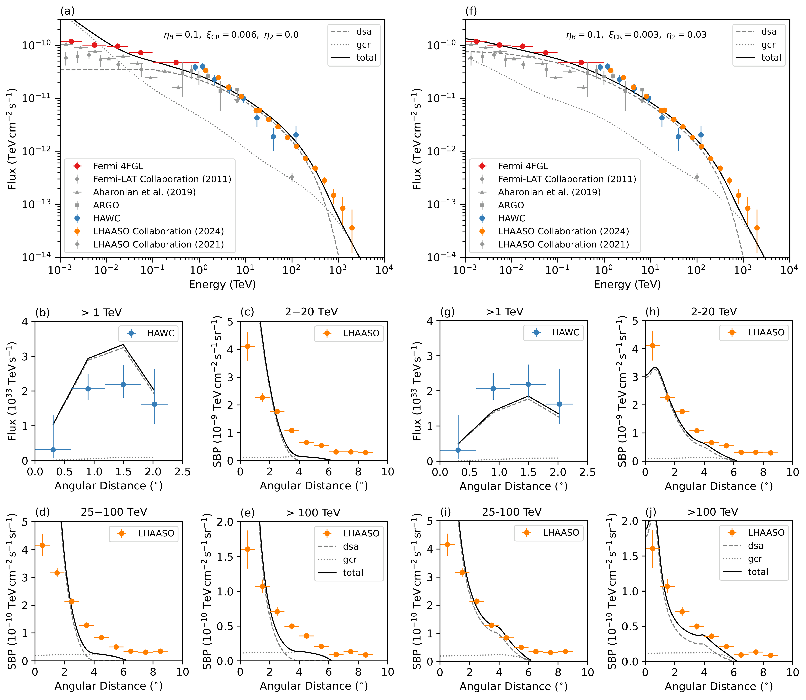
图注：Total gamma-ray flux from the Cygnus bubble (top) and gamma-ray morphologies in different energy ranges (bottom), for two cases: (1) Bohm diffusion in the bubble and Galactic diffusion in the cloud (left panels), and (2) Bohm diffusion in the bubble and slow diffusion in the cloud with $D_{\mathrm{c}}(E) = 4 \times 10^{24} ~ E_{\mathrm{GeV}}^{0.6} ~ \mathrm{cm}^{2} ~ \mathrm{s}^{-1}$ (right panels). The dashed lines represent the gamma-ray emission from shock accelerated particles, while the dotted lines represent the emission from penetrated GCRs.
对应解读：建议重点查看的主要数据与模型比较；对应论文关于云中快/慢扩散、穿透银河宇宙线贡献以及不同能段伽马射线形态的核心讨论。
入选理由：该图同时给出总伽马射线能谱和不同能段的形态分布，并区分激波加速粒子与穿透GCR的贡献，直接支撑摘要中“GCR在约300 TeV以上显著贡献”“需要抑制扩散解释LHAASO形态”的关键结论，是候选图中信息密度最高、最接近观测诊断的一张。
来源与置信度：\(arxiv_source\)；high；\(arxiv_source\) / aa58034-25.tex:figure[4]
Fig11
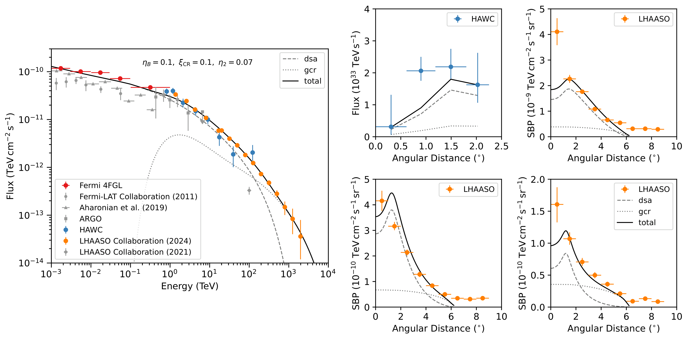
图注：Particle acceleration at the WTS, assuming a bubble density of $n_{\rm b}=1 ~ \rm{cm}^{-3}$ and an ambient density of $n_0=2 ~ \rm{cm}^{-3}$ (resulting in $R_\mathrm{b} \sim 150~\mathrm{pc}$). A spatially dependent Bohm diffusion is adopted. The diffuse gamma-ray emission from GCRs is calculated to reproduce the observed PeV gamma-ray flux by adjusting the gas column density along the line of sight. A low-energy cutoff at $\sim 1~\mathrm{TeV}$ is applied to the diffuse gamma-ray flux to mimic the subtraction of the diffuse component in the GeV data analysis of Fermi-LAT.
对应解读：模型拟合与结论段中关于WTS粒子加速、空间依赖Bohm扩散、150 pc气泡尺度以及PeV伽马射线通量解释的最终情景。
入选理由：该图展示作者在WTS框架下采用空间依赖Bohm扩散并加入沿视线弥散GCR伽马射线后的结果，直接对应论文结论中‘非相对论稳态源解释谱和形态需要极端假设’的判断，比单纯参数扫描图更适合作为最终模型诊断图。
来源与置信度：\(arxiv_source\)；high；\(arxiv_source\) / aa58034-25.tex:figure[11]
Fig01
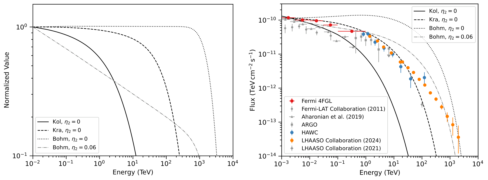
图注：Particle spectrum at the shock (top) and total gamma-ray emission from the Cygnus bubble (bottom), for uniform Kolmogorov, Kraichnan, and Bohm diffusion coefficients ($\eta_2=0,~0.06$), respectively. The red dots represent the latest GeV data from Fermi-LAT, while earlier measurements are shown as gray dots and gray triangles \(\citep{Abdollahi_2020,Ackermann_2011,Aharonian_2019}.\) The gray squares refer to ARGO \(\citep{Bartoli_2014}.\) The blue dots and orange dots represent the TeV gamma-ray measurements by HAWC and LHAASO \(\citep{Abeysekara_2021,LHAASO_2024}.\) Earlier LHAASO data is also shown as gray diamond \(\citep{Cao_2021}.\)
对应解读：建议检查的主要模型比较图；对应均匀Kolmogorov、Kraichnan和Bohm扩散系数下的粒子谱与总伽马射线能谱比较。
入选理由：该图把Fermi-LAT、ARGO、HAWC、LHAASO等观测数据与三类扩散模型的预测放在同一能谱图中，是理解为何普通扩散模型不足、为何需要Bohm型抑制扩散的基础图。
来源与置信度：\(arxiv_source\)；high；\(arxiv_source\) / aa58034-25.tex:figure[1]
Fig02
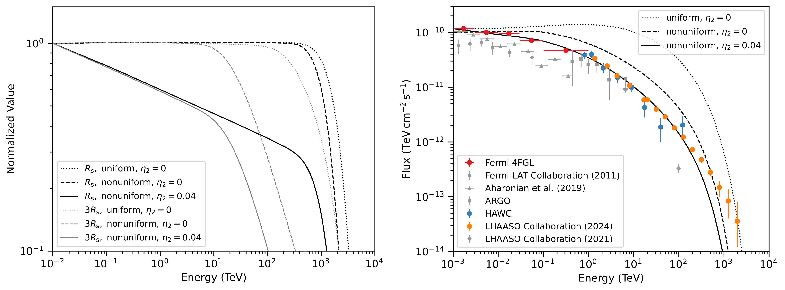
图注：Particle spectrum at $R_{\mathrm{s}}$ and $3R_{\mathrm{s}}$ (top), and total gamma-ray emission from the Cygnus bubble (bottom), for uniform Bohm diffusion (dotted lines), non-uniform Bohm diffusion with $\eta_2=0$ (dashed lines), and non-uniform Bohm diffusion with $\eta_2=0.04$ (solid lines).
对应解读：模型拟合段中关于均匀Bohm与非均匀Bohm扩散、不同eta_2取值对粒子谱和总伽马射线发射影响的比较。
入选理由：该图专门比较均匀与空间非均匀Bohm扩散，对应摘要中‘空间依赖Bohm扩散系数是复现能谱和形态所需’的关键物理判断，能补充Fig01说明扩散模型从均匀到非均匀的必要性。
来源与置信度：\(arxiv_source\)；high；\(arxiv_source\) / aa58034-25.tex:figure[2]
Fig07
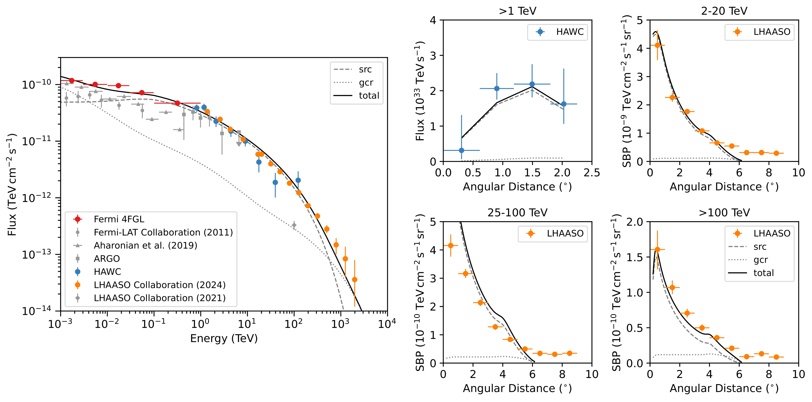
图注：Continuous injection from a central point source, assuming a bubble gas density of $n_{\rm b}=10 ~ \rm{cm}^{-3}$ and a diffusion coefficient with $D_0=4\times 10^{24}~\rm cm^2 ~ s^{-1}$ and $\delta=0.6$.
对应解读：替代源模型讨论；对应中心点源连续注入、给定气泡密度和扩散系数下的伽马射线预测。
入选理由：论文不仅讨论WTS，也比较中心源连续注入情景。该图代表连续注入模型，可帮助读者判断非WTS稳态源是否能解释观测，但相较Fig04和Fig11对核心结论的支撑较弱。
来源与置信度：\(arxiv_source\)；high；\(arxiv_source\) / aa58034-25.tex:figure[7]
Fig09
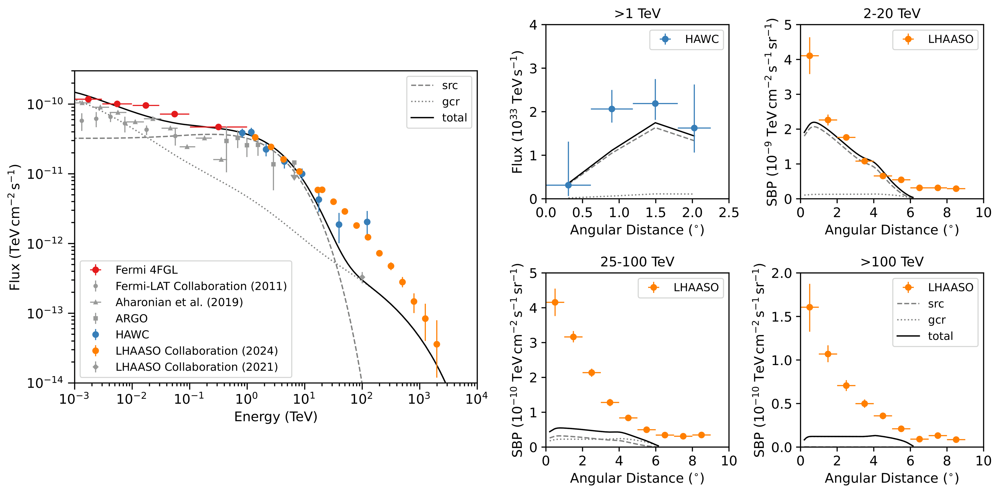
图注：Impulsive injection from a central point source, assuming a bubble gas density of $n_{\rm b}=10 ~ \rm{cm}^{-3}$ and a diffusion coefficient with $D_0=4\times 10^{24}~\rm cm^2 ~ s^{-1}$ and $\delta=0.8$.
对应解读：替代源模型讨论；对应中心点源爆发式注入、给定气泡密度和扩散系数下的伽马射线预测。
入选理由：该图代表爆发式中心源情景，与Fig07共同覆盖论文摘要中‘中心源可为稳态或爆发式’的模型分支，有助于比较不同注入历史对能谱和形态的影响。
来源与置信度：\(arxiv_source\)；high；\(arxiv_source\) / aa58034-25.tex:figure[9]
强相关工作
相关工作可沿三条线索检索。第一是观测线索：Fermi-LAT 对 Cygnus Cocoon/Cygnus X 的 GeV 扩展发射，ARGO、HAWC 对 TeV 伽马射线的测量，以及 LHAASO 对 Cygnus OB2 方向 PeV 以上弥散辐射的最新结果。检索关键词可用 “Cygnus Cocoon Fermi LAT”, “Cygnus OB2 HAWC”, “LHAASO Cygnus diffuse PeV gamma rays”。这些工作提供数据点、形态模板和背景扣除方法，是判断本文模型是否真正改善解释的基础。
第二是理论线索：大质量星团和 superbubble 作为宇宙线加速器的模型，包括星团风终止激波、一阶费米加速、风泡内湍流再加速，以及分子云作为 hadronic 伽马射线靶物质的研究。可检索 “stellar cluster wind termination shock cosmic ray acceleration”, “superbubble PeVatron”, “Bohm diffusion around star clusters”。这类基础工作可帮助判断本文要求的 Bohm 或慢扩散是否物理可行，而不仅是拟合所需。
第三是张力线索：其他 TeV halos、超新星遗迹周边分子云和 Geminga-like 慢扩散区的研究也常提出“局域扩散抑制”。应比较 Cygnus 所需的抑制尺度约 150 pc 是否比典型 TeV halo 更大、能量依赖是否类似、是否需要持续湍流注入。若不同源类都要求大范围慢扩散，可能暗示银河宇宙线传播存在区域非均匀性；若只有 Cygnus 需要极端参数，则可能是气体结构或背景源混淆造成。
还应关注反向或替代解释文献，例如 leptonic 逆康普顿模型、多源叠加、未解析 pulsar wind nebulae、视线后方源以及银河弥散背景模板不确定性。本文摘要最后提到最高能伽马射线可能来自 Cygnus association 后方源，这正是需要检索的张力方向。阅读 bibliography 时可把被作者用于“数据比较”的论文、“理论模型先验”的论文和“替代解释/背景争议”的论文分开整理，以免把观测事实和模型假设混为一谈。
相似工作：
（未提供）
基础理论 / 方法工作：
（未提供）
相反观点 / 张力线索：
（未提供）
2. Elemental cosmic ray spectra reveal two populations of Galactic sources and an immediate transition to an extragalactic component after the knee
- 来源：arXiv / astro-ph.HE
- 链接：https://arxiv.org/abs/2606.02748v1
- 作者：Timur A. Dzhatdoev, Anatoly A. Semenov
- 评分：novelty 8/10，importance 8/10，relevance 9/10，final 9.35/10
- 推荐理由：基于DAMPE、LHAASO、IceTop等元素宇宙线谱解释膝区及银河/河外成分转换，直接涉及宇宙线起源和LHAASO数据，相关性和潜在影响较高。
中文题目：元素宇宙线能谱指向两类银河源，并在膝区后快速过渡到河外成分
做了什么：这篇文章把近年 DAMPE、LHAASO、IceTop 等实验给出的分元素或元素组宇宙线能谱放在同一刚度标尺下，检验从数百 \(Z\,\mathrm{GeV}\) 到 \(10^{3}Z\,\mathrm{PeV}\) 的多重拐点是否需要多类银河源解释。作者提出三成分图像：低能银河成分在 \(E_{k1}\simeq 15Z\,\mathrm{TeV}\) 附近衰减，高能银河成分负责 PeV 膝区，随后河外成分在膝区后很快接管；他们认为 \(10\,\mathrm{PeV}\) 到 \(1\,\mathrm{EeV}\) 之间不需要额外第三类银河宇宙线成分。核心证据来自不同元素的膝、踝位置：有些拐点按刚度 \(E/Z\) 缩放，有些则不按刚度缩放，这对源族、传播和河外过渡都有直接约束。
为什么重要：银河宇宙线从 TeV 到 EeV 的能谱结构长期被膝区、第二膝、踝区和成分演化纠缠在一起。若本文的解释成立，传统上常被放入“缺口”的额外银河高能源族并非必要，膝区之后的河外贡献可能比许多模型预期来得更早。这会改变我们对银河超新星遗迹、少数强源、磁场限制和河外宇宙线低能端的理解。
理论 / 观测 / 仪器方法价值：理论价值在于把分元素谱的多个拐点统一到一个可检验的三成分分解框架中，而不是只拟合全粒子谱。观测价值在于强调 DAMPE 和 LHAASO 等高精度元素谱对源族判别的作用，特别是 \(E_{a2}\) 和 \(E_{a3}\) 是否刚度相关这一诊断。方法价值在于展示如何用刚度标度、元素间相对归一化和谱形凹凸性来区分源注入、传播软化和河外过渡。
为什么应该关注：如果你研究宇宙线起源、银河磁场、PeVatrons 或高能伽马/中微子背景，这篇文章值得看，因为它把“膝后银河还有没有隐藏源族”这个问题转化为可由分元素能谱直接检验的模型选择问题。它也提醒观测者：全粒子谱上的平滑拟合可能掩盖元素谱中的非刚度特征，而这些非刚度特征恰恰可能决定河外成分何时出现。
展开详细解读：文章讲解、背景、理论、重点章节、图表与相关工作
文章详细讲解
科学问题：本文针对的是银河宇宙线能谱中多个拐点的物理来源。传统全粒子宇宙线谱在几 \(\mathrm{PeV}\) 附近出现膝，在更高能量还有第二膝和踝；但全粒子谱把质子、氦、碳氧、铁等混在一起，容易把元素成分变化误读为单一谱形变化。作者关心的是：当我们逐个元素或逐个元素组观察时，\(E_{a1}\simeq 500Z\,\mathrm{GeV}\)、\(E_{k1}\simeq 15Z\,\mathrm{TeV}\)、\(E_{k2}\simeq 3Z\,\mathrm{PeV}\) 以及更高能踝状特征，是否能由少数源族自然解释，还是必须在 \(10\,\mathrm{PeV}\) 到 \(1\,\mathrm{EeV}\) 加入第三类银河源。
作者怎么做：他们利用 DAMPE、LHAASO、IceTop 以及其他实验近年给出的元素谱，把谱特征按核电荷 \(Z\) 进行比较。关键不是简单寻找全粒子谱的一个膝，而是看不同元素的拐点是否满足刚度标度，即特征能量近似随 \(Z\) 线性移动。若某个特征由加速或传播中的最大刚度控制，通常应表现为 \(E_{\ast}\propto Z\)；若不同元素的特征能量不按 \(Z\) 缩放，则更可能与特定源族的元素组成、时间演化、局地源或河外成分叠加有关。
关键结果：文章提出三成分模型。第一是低能银河成分，其谱形为凸形，反映源内加速粒子谱本身的曲率，并在 TeV 膝之后逐渐退出；第二是高能银河成分，覆盖 PeV 膝并给出 \(E_{k2}\simeq 3Z\,\mathrm{PeV}\) 附近的刚度相关陡化；第三是河外成分，在膝区之后很快变得重要。作者强调，质子在 \(E_{a2-p}\simeq 150\,\mathrm{TeV}\)、氦在 \(E_{a2-He}\simeq 1\,\mathrm{PeV}\) 的硬化并不呈简单刚度标度，这对单一传播解释不利，也提示元素谱中存在不同物理成分的交叠。
局限和下一步：这类工作不可避免地受限于实验间能标、展开方法、空气簇射 hadronic interaction model、元素分组和系统误差。尤其在 \(\mathrm{PeV}\) 以上，直接探测与地面阵列之间的交叉校准仍是核心瓶颈。下一步需要更高精度的分元素谱、统一能标下的联合拟合、对成分矩阵的系统误差传播，以及把宇宙线谱与银河 PeVatron 伽马射线、各向异性和可能的中微子信号联合起来检验。
背景知识
研究对象是高能宇宙线中的带电核素，能量范围从 \(\mathrm{GeV}\) 到 \(\mathrm{EeV}\) 以上。由于带电粒子在银河磁场中强烈偏转，宇宙线的到达方向很难直接指向源，因此能谱、元素组成、各向异性和二级粒子比例成为主要诊断。本文关心的不是低能太阳调制区，而是 \(100Z\,\mathrm{GeV}\) 到 \(10^{3}Z\,\mathrm{PeV}\) 的宽能段，这一范围跨越直接探测和地面阵列探测。
历史上，几 \(\mathrm{PeV}\) 附近的全粒子膝常被解释为银河源最大加速刚度、银河传播逃逸增强，或两者共同作用。若最大刚度为 \(R_{\max}\)，则质子先变陡，氦随后，铁在更高能量才变陡，全粒子谱的膝就来自不同元素逐次退出。这个图像很有吸引力，但全粒子谱本身并不足以唯一判定源族数量，因为多个元素谱叠加后会制造出看似平滑的拐点。
近年值得重新看这个问题，是因为 DAMPE、CALET、NUCLEON、LHAASO、IceTop、KASCADE-Grande 等实验在不同能区提供了更细的元素或元素组信息。DAMPE 等直接探测器在 TeV 到百 TeV 能段给出较精确谱形，LHAASO 等地面阵列开始把元素组谱推向 PeV 以上。这使得研究者不再只能问“全粒子谱有没有膝”，而可以问“质子、氦、重核的膝和踝是否共享同一刚度标尺”。
常见误区之一是把所有硬化都归因于传播扩散系数的单一折断。传播确实会改变谱指数，但如果某些硬化能量不随 \(Z\) 缩放，单一刚度相关传播变化就很难解释。另一个误区是把膝后到 EeV 前的所有通量缺口都自动归于新的银河源族，例如年轻超新星遗迹、超新星与星风泡、微类星体或银河中心源；本文的重点正是指出，在分元素谱允许的情况下，河外成分较早接管也许能减少对这类额外银河成分的需求。
基础理论 / 方法脉络
基础物理图像是：宇宙线核素由源注入，在银河磁场中扩散传播，并在逃逸、能量损失、核破碎和可能的再加速作用下形成观测谱。对 \(\mathrm{TeV}\) 以上的核素，连续能量损失通常不是主导项，谱形主要由源注入谱和扩散逃逸时间共同决定。若源注入为幂律 \(Q(E)\propto E^{-\gamma}\)，扩散系数为 \(D(R)\propto R^{\delta}\)，则稳态观测谱常近似为 \(J(E)\propto E^{-(\gamma+\delta)}\)。
刚度 \(R\) 是本文的核心量。对电荷数为 \(Z\) 的核，刚度近似为动量除以电荷，超相对论情形下 \(R\simeq E/(Ze)\)。许多加速和传播过程直接感知的是粒子在磁场中的回旋半径，而非总能量，因此最大能量或谱折断若由磁约束控制，通常表现为 \(E_{\ast}\simeq Z E_{\ast,p}\)。本文正是利用这一点区分刚度相关与非刚度相关谱特征。
论文提出的低能银河成分具有凸谱形，即谱指数随能量变化，而不是单一幂律。这可能反映源内加速条件、逃逸时间或不同局地源叠加造成的曲率。高能银河成分则负责 PeV 量级的刚度相关膝；如果其最大刚度约为几 \(\mathrm{PV}\)，那么质子在几 \(\mathrm{PeV}\) 附近陡化，铁可延伸到约 \(100\,\mathrm{PeV}\) 量级。
观测上，直接探测器测量入射粒子的电荷和能量沉积，地面阵列通过空气簇射的电磁、μ子和强子组分反演初级能量与质量。两类数据的系统误差不同：直接探测受能量响应、漏能和有限几何因子限制；地面阵列受 hadronic interaction model、雪崩展开、能标和元素分组影响。本文类型的谱分解最容易受到能标偏移、元素错分和不同实验归一化差异影响。
主要退化关系包括源注入谱指数与扩散指数的退化、最大刚度与谱截断形状的退化、河外低能端与高能银河尾部的退化，以及元素丰度与总谱归一化的退化。判断三成分模型是否有说服力，不能只看全粒子谱是否拟合得好，还要看每个元素谱的拐点位置、硬化幅度、残差结构和成分演化是否同时合理。
公式与推导
第一步从稳态输运的最简图像出发。对某一核素 \(i\)，忽略高能连续能量损失和强再加速时，可写成
这里 \(n_i\) 是粒子数密度，\(Q_i\) 是源项，\(D_i(R)\) 是扩散系数，\(\tau_{\rm loss}\) 可代表逃逸以外的破坏或损失时间。对本文关心的 \(\mathrm{TeV}\) 以上核素，常把有效控制项近似为源注入与逃逸的平衡。
第二步得到观测通量与密度的关系：
其中 \(J_i(E)\) 是单位能量、单位面积、单位时间、单位立体角通量，\(c\) 是光速。这个式子说明谱拟合本质上是在拟合传播后密度的能量依赖。
第三步引入刚度。超相对论核素满足
因此如果某个谱特征由磁场约束或扩散性质决定，其特征能量应近似满足
本文判断 \(E_{k1}\) 与 \(E_{k2}\) 是否属于刚度相关特征，核心就是检查不同 \(Z_i\) 的 \(E_{\ast,i}/Z_i\) 是否接近常数。
第四步给出源注入与传播导致的谱指数关系。若
并把逃逸时间写作 \(\tau_{\rm esc}\propto H^2/D(R)\)，则有近似标度
这里 \(H\) 是银河宇宙线晕尺度。该式展示了为什么源谱与传播谱指数高度退化。
第五步用一个平滑折断函数描述单个成分的膝或踝：
这里 \(m\) 表示低能银河、高能银河或河外成分，\(A_{i,m}\) 是归一化，\(\alpha_{i,m}\) 是折断前谱指数，\(\Delta\alpha_m\) 是折断后变陡量，\(s_m\) 控制折断尖锐程度。若 \(\Delta\alpha_m<0\)，同一形式也可描述硬化。
第六步把三成分相加得到本文的核心分解思想：
其中 \({\rm G1}\) 是低能银河成分，\({\rm G2}\) 是高能银河成分，\({\rm EG}\) 是河外成分。全粒子谱则为
这两个式子说明，只拟合 \(J_{\rm all}\) 会丢失元素间拐点位置信息。
第七步定义局部谱指数作为读图诊断：
膝对应 \(\Gamma_i(E)\) 增大，踝或硬化对应 \(\Gamma_i(E)\) 减小。比较不同元素的 \(\Gamma_i(E)\) 变化位置，比直接比较带有归一化差异的通量更稳健。
第八步给出观测拟合常用的统计量。若实验给出数据点 \(J_{i,k}^{\rm obs}\) 及误差 \(\sigma_{i,k}\)，一个基础的高斯近似为
这里 \(\boldsymbol{\theta}\) 包括归一化、谱指数、折断能量和成分丰度。若存在能标系统误差，可引入 \(E_k\rightarrow E_k(1+\epsilon_{\rm cal})\)，并对 \(\epsilon_{\rm cal}\) 加先验约束。
第九步用成分平均质量连接元素谱和空气簇射观测：
其中 \(A_i\) 是质量数。若河外成分在膝后迅速接管，\(\langle \ln A\rangle\) 的能量演化应与单纯铁族银河尾部模型不同；这是检验本文结论的重要外部诊断。
模型拟合 / 应用方法
这篇文章的核心拟合思想是分元素三成分叠加。每个元素的观测谱由低能银河成分、高能银河成分和河外成分相加得到，拟合量包括各成分归一化、谱指数、折断能量、折断平滑度和元素丰度。相比只拟合全粒子谱，分元素拟合增加了约束：同一成分的折断能量是否应满足 \(E_b\propto Z\)，不同元素的归一化是否对应合理源丰度，硬化或软化在局部谱指数中是否同步出现。
似然层面，若使用各实验公布的通量点，最简单是对 \(\log J\) 或 \(J\) 构造加权残差；但真正严谨的联合拟合应包含能标漂移、归一化漂移和元素误分矩阵。特别是 LHAASO、IceTop 等地面阵列反演得到的是元素组谱而非完美分元素谱，模型预测需要先卷积到同样的元素组和探测响应后再比较，否则残差可能被误解为物理结构。
主要退化来自几个方向。第一，低能银河成分的凸谱形可以由源注入曲率、传播折断或多个局地源叠加共同造成。第二，高能银河成分的尾部和河外成分低能端在 \(10\,\mathrm{PeV}\) 到 \(1\,\mathrm{EeV}\) 容易互相替代。第三，能标系统误差会整体移动膝和踝的位置，从而影响是否满足刚度标度。第四，元素丰度与成分归一化高度相关，尤其在元素组而非单元素数据中更明显。
残差诊断应重点看两类问题：一是每个元素的局部谱指数变化是否被模型捕捉，二是不同实验之间同一能区是否需要不合理的归一化或能标偏移。如果三成分模型只在全粒子谱上表现好、但在质子或氦谱的 \(E_{a2}\) 附近出现系统性残差，那么“不需要第三银河成分”的结论就会变弱。相反，如果加入第三银河成分只能改善少数全粒子数据点而破坏元素谱一致性，那么它就缺乏物理必要性。
实际应用上，这类模型可作为高能宇宙线全局拟合的低参数基准模型。它可以用来预测 \(\langle\ln A\rangle\)、空气簇射最大深度 \(X_{\max}\)、银河高能伽马射线背景和宇宙线各向异性。模型可能失败的地方包括：河外成分低能端在银河磁场中传播受限、局地源导致显著时间依赖、或 hadronic interaction model 改变地面阵列成分反演。
重点章节 / 结果段落怎么读
数据/样本部分应重点看作者采用了哪些分元素或元素组谱，以及不同实验覆盖的能区如何拼接。读者需要留意 DAMPE 与 LHAASO 的能区衔接、IceTop 或其他地面阵列数据的元素分组方式，以及作者是否显式处理实验间能标差异。
谱特征整理部分是全文的关键入口。这里应看作者如何定义 \(E_{a1}\)、\(E_{k1}\)、\(E_{k2}\)、\(E_{a2}\) 和 \(E_{a3}\)，以及哪些特征被认为满足 \(E_{\ast}\propto Z\)，哪些不满足。尤其要检查质子与氦在第二个踝状硬化处的能量比例，因为这直接关系到单一刚度机制是否成立。
模型方法部分要看三成分的具体参数化。低能银河成分的“凸形谱”如何实现，高能银河成分的 PeV 膝是否强制刚度标度，河外成分低能端如何引入，都会影响“不需要第三银河源族”的结论。读者应区分模型假设、经验拟合和物理解释三者。
主结果部分应看分元素谱和全粒子谱是否同时被合理描述。特别要关注 \(10\,\mathrm{PeV}\) 到 \(1\,\mathrm{EeV}\) 区间：如果三成分模型能在这里给出连续过渡，而不需要额外银河成分，那么这是本文最具争议也最有价值的结果。
讨论和稳健性部分应重点看作者如何处理系统误差和替代解释。若论文没有充分量化能标、空气簇射模型和元素误分的不确定性，读者应把结论理解为一种有力的物理图像，而不是已经完成的全局贝叶斯模型选择。
建议重点查看的图表
-
分元素能谱汇总图：检查质子、氦和重元素谱在 \(\mathrm{TeV}\) 到 \(\mathrm{PeV}\) 的硬化、膝和实验间归一化差异，特别是不同实验数据点是否在误差内衔接。
-
刚度缩放后的谱图：把横轴换成 \(E/Z\) 或等效刚度后，看 \(E_{a1}\)、\(E_{k1}\) 和 \(E_{k2}\) 是否对齐；若某些特征不对齐，就是本文区分源族的关键。
-
三成分分解图：检查低能银河、高能银河和河外成分分别在哪些能区占优，三者相加是否只是贴合全粒子谱，还是同时贴合元素谱。
-
局部谱指数或残差图：看 \(\Gamma(E)\) 的变化是否对应膝和踝，残差是否在某些元素或能区成串偏离。
-
全粒子谱与元素求和对比图：确认模型从元素谱求和后能否复现全粒子谱，而不是独立调参拟合两套数据。
-
平均质量或元素组成演化图：若有 \(\langle\ln A\rangle\) 或元素组比例，应检查膝后河外成分接管是否导致合理的质量演化。
-
系统误差或替代模型比较表：重点看是否允许第三银河成分、是否改变河外成分低能端，以及统计改进是否显著。
关键图表逐图导读
图 1：建议把它作为数据地图来读。横轴通常是能量 \(E\) 或刚度相关能量标尺，纵轴可能是 \(J(E)\) 乘以 \(E^\gamma\) 后的加权通量，以放大谱形变化。数据点来自 DAMPE、LHAASO、IceTop 等实验，模型线若存在，应区分单元素与元素组。读图陷阱是纵轴加权会让小的谱指数变化看起来很大，同时不同实验能标偏移会伪造硬化或软化。
图 2：若论文给出按 \(E/Z\) 重标定的谱特征图，应重点看各元素的膝和踝是否在同一刚度处重合。横轴为 \(E/Z\) 或等效刚度，纵轴为加权通量或局部谱指数。若 \(E_{k1}\) 与 \(E_{k2}\) 对齐而 \(E_{a2}\) 不对齐，这正支持作者关于不同物理起源的判断。陷阱是氦、碳氧和铁组的有效 \(Z\) 选择会影响对齐程度。
图 3：三成分分解图应显示 \({\rm G1}\)、\({\rm G2}\) 和 \({\rm EG}\) 的单独贡献及总和。横轴为 \(E\)，纵轴为元素通量或全粒子通量。关键是看 \({\rm G1}\) 是否在 TeV 膝后自然退出，\({\rm G2}\) 是否覆盖 PeV 膝，\({\rm EG}\) 是否在膝后立即上升到可观比例。读图陷阱是三条平滑曲线的交叉位置可能由参数化强烈决定，并不必然唯一。
图 4：残差或局部谱指数图比通量图更能说明问题。横轴为 \(E\)，纵轴为 \(\Delta J/\sigma\)、相对残差或 \(\Gamma(E)\)。如果模型正确，残差不应在质子 \(E_{a2-p}\simeq 150\,\mathrm{TeV}\) 或氦 \(E_{a2-He}\simeq 1\,\mathrm{PeV}\) 附近呈系统偏差。陷阱是相邻数据点的系统误差通常相关，不能把每个点都当作独立高斯误差。
图 5：若有全粒子谱对比，应看元素求和是否自然复现全粒子膝、第二膝和更高能过渡。横轴为 \(E\)，纵轴为加权全粒子通量。模型总线与各实验点的吻合只能作为必要条件，不是充分条件；真正的约束仍来自元素谱。
图 6：若有 \(\langle\ln A\rangle\) 或元素组比例图，横轴为 \(E\)，纵轴为平均对数质量或轻/重组分比例。本文的早期河外过渡应在质量演化上留下信号。读图陷阱是 \(\langle\ln A\rangle\) 强烈依赖空气簇射模型，不同 hadronic interaction model 给出的绝对值不能简单混合。
论文原图 / 可嵌入图片
（未提供 verified figure；为避免编造图片链接，本节只在能确认官方图片 URL 或成功提取论文原图时嵌入图片。）
强相关工作
这篇工作与传统“膝区由刚度相关最大能量造成”的图像关系密切，也与 KASCADE、KASCADE-Grande、IceTop 和 LHAASO 的元素组谱解释相连。相似工作通常会检索关键词：cosmic ray knee, rigidity-dependent knee, elemental spectra, DAMPE proton helium spectrum, LHAASO cosmic ray composition, IceTop composition。建议读者把本文与全局宇宙线谱模型、Hillas 限制、扩散传播模型和多源族模型放在一起看。
相反或存在张力的观点包括：膝后到 \(1\,\mathrm{EeV}\) 仍需要额外银河源族；河外成分低能端因银河磁场、源分布或传播损失难以在 \(10\,\mathrm{PeV}\) 后立刻占主导；以及高能元素组谱的空气簇射反演系统误差可能改变拐点位置。检索关键词可用：second knee Galactic component, Galactic PeVatrons cosmic rays, extragalactic transition after knee, ankle transition models, hadronic interaction uncertainty air shower composition。
相似工作：
- https://arxiv.org/abs/2606.02748
- https://arxiv.org/abs/1303.3565
基础理论 / 方法工作：
- https://ui.adsabs.harvard.edu/abs/2005ARNPS..55..285B/abstract
- https://arxiv.org/abs/astro-ph/0204527
相反观点 / 张力线索：
- https://arxiv.org/abs/0804.4004
- https://arxiv.org/abs/1306.6675
3. Systematic Error in Approximate Models of the GRB Early Afterglow
- 来源：arXiv / astro-ph.HE
- 链接：https://arxiv.org/abs/2606.02691v1
- 作者：Benjamin Amend, Eric R. Coughlin, Jonathan Zrake
- 评分：novelty 8/10，importance 8/10，relevance 9/10，final 9.35/10
- 推荐理由：直接研究GRB早期余辉两区近似模型的系统误差，用高分辨率相对论流体模拟量化对反向/正向激波辐射预测的偏差，和伽马暴高能天文高度相关且方法结果可复用。
中文题目：伽马暴早期余辉近似模型中的系统误差
做了什么：这篇文章用高分辨率狭义相对论流体模拟，检验伽马暴早期余辉中常用的“两区模型”在反向激波穿过喷流壳层前后的可靠性。核心结论是：在牛顿型反向激波情形下，反向激波很早就穿过抛射物，但流体还远未进入 Blandford–McKee 自相似阶段；这中间会出现可持续到观测者时间约数小时的动力学空档。标准半解析处方如果把两区阶段直接拼接到自相似解，会在不同拼接方式下显著高估反向激波的射电到紫外辐射，或高估前向激波的 X 射线辐射。
为什么重要：早期余辉常被用来反推出伽马暴喷流的初始洛伦兹因子、壳层厚度、外部介质密度、磁化程度和反向激波微物理参数。如果动力学近似本身在数小时尺度上有系统偏差，那么由早期光变曲线得到的物理参数可能不是简单的统计误差问题，而是模型错配导致的偏差。
理论 / 观测 / 仪器方法价值：这项工作的价值不在于提出一个新的经验拟合公式，而在于用数值流体模拟定量标定了常用半解析模型的失效区间。它提醒观测和理论工作者：反向激波穿壳时间、进入 Blandford–McKee 解的时间、以及观测峰值时间不应被随意等同；对早期多波段余辉的模型拟合需要显式处理这段非自相似演化。
为什么应该关注：如果你用早期射电、光学、紫外或 X 射线余辉来估计伽马暴喷流参数，这篇文章直接关系到参数是否可信。它说明某些看似精细的多波段拟合，可能只是把错误的动力学拼接处方吸收到微物理参数中。对未来快速响应观测、反向激波搜寻、以及用余辉约束中心引擎和喷流结构的研究，这是一篇需要纳入误差预算的基准性工作。
展开详细解读：文章讲解、背景、理论、重点章节、图表与相关工作
文章详细讲解
科学问题：伽马暴余辉的标准图像是相对论抛射物撞击外部介质，形成前向激波和反向激波，二者分别加热外部介质和喷流壳层。很多早期余辉半解析模型把系统简化为两个均匀区域，即前向激波后的外部介质与反向激波后的抛射物，并用压力平衡和整体守恒来近似演化。这个做法在建模速度上很有吸引力，但问题是：在反向激波穿过壳层之后、流体真正进入 Blandford–McKee 自相似解之前，它到底有多准确？这篇文章专门追问这个被许多拟合工作隐含略过的区间。
作者怎么做：作者使用高分辨率狭义相对论流体模拟，直接演化冷的相对论壳层撞击均匀或给定外部介质后形成的激波结构，并与广泛使用的两区模型进行比较。两区模型通常把前向激波和反向激波后的物质分别视为均匀薄壳，用少量全局变量描述；而数值模拟可以解析壳层内部速度、压力、密度和能量分布的连续结构。文章重点区分相对论型反向激波和牛顿型反向激波，因为这两种极限下反向激波穿壳对抛射物动能的抽取效率不同。
关键结果：最重要的结果是，在牛顿型反向激波情形下，反向激波穿过壳层的时间可以显著早于流体进入 Blandford–McKee 自相似解的时间。也就是说，标准半解析模型中经常假设的“穿壳后很快进入自相似”并不成立。这个中间阶段在观测者时间中可达到约数小时，对早期多波段余辉恰恰是关键时间窗。若用常规拼接处方处理这段演化，模型可能把反向激波辐射在射电、红外、光学、紫外波段高估，也可能在另一种处方下把前向激波 X 射线通量高估。
更具体地说，误差不是一个单纯的归一化偏差，而是依赖频段、观测时间和拼接方式的系统误差。反向激波分量对壳层内部真实的密度和压力分布特别敏感；两区模型把这些结构压缩成少数平均量后，会错误预测电子能量、磁场强度和同步辐射特征频率的演化。前向激波分量虽然在较晚时间趋向 Blandford–McKee 解，但如果过早使用自相似解，也会在高频段产生错误的冷却频率、峰值通量或光变斜率。
局限和下一步：这项研究主要评估动力学近似导致的误差，并非完整解决所有早期余辉建模问题。真实伽马暴可能有角向结构、非均匀外部介质、喷流横向扩展、磁化抛射物、能量注入、微物理参数随时间变化等复杂性。文章的结论提示下一步应发展既保留半解析效率、又能捕捉穿壳后非自相似阶段的改进模型，并把这些动力学系统误差纳入早期多波段拟合的后验不确定度。
背景知识
伽马暴余辉研究的基本对象是一个以超相对论速度运动的喷流或壳层。当它扫过周围介质时，动能逐渐转化为激波内能，再通过非热电子同步辐射释放为从射电到 X 射线甚至更高能的宽波段余辉。前向激波通常主导较晚时间的余辉，而反向激波只在早期短暂存在，却携带关于初始抛射物的直接信息。
历史上，Blandford–McKee 自相似解为相对论爆波提供了标准动力学基准。它描述的是一个已经充分减速、能量主要集中在前向激波后方薄层中的超相对论爆波。很多余辉模型在实际使用中会把早期两激波阶段与后期 Blandford–McKee 阶段拼接起来，从而得到可快速计算的光变曲线。这种半解析框架支撑了大量关于初始洛伦兹因子和反向激波辐射的解释。
但早期余辉恰好处在最容易出错的阶段。反向激波从壳层尾部向前传播并穿过抛射物，之后被激波加热的壳层继续膨胀、冷却、混合，其速度和压力分布并不会自动变成 Blandford–McKee 自相似结构。尤其在牛顿型反向激波中，反向激波对抛射物的减速较弱，穿壳并不等价于完成整体动能重分配。因此，把穿壳时间、减速时间和自相似建立时间混为一谈，是早期余辉文献中常见但危险的简化。
为什么现在值得重新看？一方面，快速响应光学、射电和高能观测越来越能覆盖爆发后分钟到小时的窗口，这正是反向激波和前向激波过渡区。另一方面，多波段拟合常给出貌似精确的微物理参数，但这些参数可能吸收了动力学模型误差。再加上数值相对论流体模拟的分辨率和效率提高，现在可以系统地把半解析近似与高保真模拟进行对照，而不只是依靠渐近标度关系。
该领域一个常见误区是把反向激波的有无直接等同于某个单一观测峰，或者认为只要晚期光变满足标准斜率，早期动力学误差就不重要。事实上，同步辐射谱的不同频段对不同流体区域和不同特征频率敏感；某一频段看起来可拟合，并不保证另一个频段的分量分解正确。另一个误区是把微物理参数如电子能量分数和磁场能量分数当作万能调节旋钮，这会掩盖动力学处方本身的偏差。
基础理论 / 方法脉络
物理图像可以从一维相对论碰撞开始理解：一个初始洛伦兹因子很大的冷壳层进入外部介质。接触间断面两侧分别是前向激波扫起的外部介质和反向激波加热的喷流物质。前向激波向外传播，反向激波在壳层参考系中向后传播；两者之间的压力近似相等，但密度、速度和内能分布并不一定均匀。
两区模型的核心假设是把前向激波区和反向激波区各自近似为均匀区域，用总能量、扫掠质量、壳层质量和一个共同压力来描述动力学。这个近似在计算光变时非常方便，因为同步辐射只需要给定局部内能密度、磁场、电子数和 bulk 洛伦兹因子，就能估算峰值通量和特征频率。但这种平均化会抹去真实流体中由稀疏波、压缩波和速度梯度形成的结构。
反向激波通常分为相对论型和牛顿型。相对论型反向激波在壳层参考系中速度很高，能有效减速壳层并把大量动能转为内能；牛顿型反向激波较弱，穿过壳层时只轻微扰动抛射物。本文强调的系统误差主要出现在牛顿型反向激波中，因为穿壳事件发生了，但整个爆波的能量和动量分布还没有调整到 Blandford–McKee 解要求的自相似结构。
观测上，早期余辉的关键量包括峰值通量、注入频率、冷却频率、自吸收频率以及不同频段的光变斜率。前向和反向激波各有一套这些量，并且在观测者时间上交叠。射电到紫外通常对反向激波残余辐射很敏感，X 射线则常被前向激波高能电子主导，但在过渡阶段二者都可能受到错误动力学的影响。
退化关系和系统误差是本文的中心。外部密度、初始壳层宽度、总能量、初始洛伦兹因子、电子能量分数、磁场能量分数都能改变早期光变峰值和斜率。如果动力学模型提前进入自相似解，拟合算法可能通过改变微物理参数来补偿错误的流体演化。这样得到的参数后验会显得很窄，却围绕错误模型集中。
公式与推导
第一步是从相对论爆波的能量尺度出发。若各向同性等效能量为 \(E_{\rm iso}\)，外部介质静质量密度为 \(\rho_{\rm ext}=n m_{p}\)，爆波洛伦兹因子为 \(\Gamma\)，则扫起半径 \(R\) 内物质后可用量级关系估计能量：
这里 \(n\) 是外部粒子数密度，\(m_{p}\) 是质子质量，\(c\) 是光速。这个式子说明，当扫起物质的相对论内能达到初始动能量级时，壳层开始明显减速。
由上式可定义常用减速半径：
其中 \(\Gamma_{0}\) 是初始洛伦兹因子。对应观测者时间近似为
其中 \(z\) 是红移。早期余辉中很多“峰值时间”解释都隐含使用这类关系，但本文提醒：\(R_{\rm dec}\)、反向激波穿壳半径和自相似建立半径不一定相同。
判断反向激波强弱时，需要比较壳层宽度与减速尺度。若实验室系壳层宽度为 \(\Delta_{0}\)，一个常用无量纲量可写为
当 \(\xi\) 较大时，反向激波倾向于牛顿型；当 \(\xi\) 较小时，反向激波更容易成为相对论型。这个判据的物理含义是比较壳层自身宽度与爆波在减速前可建立强反向激波的时间尺度。
两区模型常把接触间断面两侧压力近似相等：
其中 \(p_{\rm FS}\) 与 \(p_{\rm RS}\) 分别为前向激波区和反向激波区的压强。对强相对论激波，前向激波后的内能密度可近似为
这一步把动力学变量 \(\Gamma\) 与辐射计算所需的内能密度连接起来；若 \(\Gamma\) 或 \(e_{\rm FS}\) 的时间演化被两区模型算错，后面的同步辐射量都会系统偏移。
同步辐射模型通常假定磁场能量密度占内能密度的比例为 \(\epsilon_{B}\)，因此共动系磁场为
其中带撇号的 \(e'\) 是共动系内能密度。非热电子的典型洛伦兹因子可写为
其中 \(\epsilon_{e}\) 是电子能量分数，\(p\) 是电子能谱指数，\(m_{e}\) 是电子质量，\(\Gamma_{\rm rel}\) 是激波上下游相对洛伦兹因子。反向激波为牛顿型时，\(\Gamma_{\rm rel}-1\) 较小，因此反向激波电子能量特别依赖真实流体结构。
注入频率由电子回旋辐射和 bulk boosting 给出：
其中 \(q_{e}\) 是电子电荷。峰值谱通量可量级写为
其中 \(D_{L}\) 是光度距离，\(N_{e}\) 是参与辐射的电子数，\(P'_{\nu,{\rm max}}\) 是单电子共动峰值谱功率。本文所说的高估反向激波发射，本质上就是 \(N_{e}\)、\(B'\)、\(\gamma_{m}\) 和 \(\Gamma\) 的时间演化被错误平均或错误拼接。
当流体真正进入 Blandford–McKee 自相似阶段，均匀介质中有标度关系
若在反向激波穿壳后立即强行使用这个标度，就等于假设流体已经完成自相似重排。本文的数值模拟显示，在牛顿型反向激波情况下这个假设可在小时尺度内失败。
模型与模拟的差异可用相对残差诊断：
其中 \(F_{\nu}^{\rm model}\) 是两区或拼接模型预测，\(F_{\nu}^{\rm hydro}\) 是基于流体模拟后处理得到的通量。这个量直接对应观测拟合中的系统误差：若 \(\delta F_{\nu}\) 随时间和频率系统偏正或偏负，单靠调节统计误差无法修正物理解释。
模型拟合 / 应用方法
这类早期余辉拟合通常同时调整动力学参数和辐射微物理参数。动力学参数包括各向同性等效能量 \(E_{\rm iso}\)、初始洛伦兹因子 \(\Gamma_{0}\)、壳层宽度 \(\Delta_{0}\)、外部密度 \(n\) 或风介质归一化、红移 \(z\) 和观测几何。辐射参数包括 \(\epsilon_{e}\)、\(\epsilon_{B}\)、电子能谱指数 \(p\)，以及前向激波和反向激波是否允许不同的磁场能量分数。本文关注的是：即使这些参数都能自由拟合，错误动力学仍会给出系统偏差。
在观测拟合中，常用似然会比较多频段通量 \(F_{\nu}(t)\) 与模型预测，假设测量误差近似高斯或使用对数通量残差。若模型动力学正确，残差应主要表现为随机散布或可解释的观测系统误差；若两区模型在穿壳后过渡阶段失败，残差会呈现频率相关和时间相关的结构。例如射电、光学、紫外的反向激波分量可能整体偏高，而 X 射线前向激波在另一类拼接处方中偏高。
参数退化非常强。增大 \(E_{\rm iso}\) 或 \(n\) 可以改变减速时间和峰值通量；改变 \(\epsilon_{B}\) 会同时移动 \(B'\)、\(\nu_{m}\)、\(\nu_{c}\) 和 \(F_{\nu,{\rm max}}\)；改变 \(\Gamma_{0}\) 会影响早期峰值时间和反向激波强弱。因此，一个错误的两区拼接模型可能通过改变 \(\epsilon_{B}\) 或 \(\Gamma_{0}\) 来拟合某一频段，却在另一频段留下系统残差。这正是多波段联合拟合中应检查残差协方差的原因。
本文或该类工作的稳健拟合思路，应把高分辨率流体模拟作为基准，比较不同半解析处方的 \(F_{\nu}(t)\) 偏差，而不是只比较动力学标量如 \(\Gamma(t)\)。因为观测者看到的是等到达时间面上的积分辐射，不同半径和不同流体层的贡献会混合在一起。某个模型即便给出相近的总能量和前向激波半径，也可能因壳层内部结构错误而给出错误的反向激波光变。
实际应用中，读者应把本文结论转化为模型选择和误差预算：早期数小时数据若用于估计 \(\Gamma_{0}\) 或反向激波磁化程度，应同时尝试不同穿壳后演化处方，或采用数值模拟校准的修正模型。若后验参数对拼接处方高度敏感，就不应把形式上的小误差条解释为精确物理约束。
重点章节 / 结果段落怎么读
数据与数值设置部分应重点读模拟初始条件：壳层初始洛伦兹因子、宽度、总能量、外部密度剖面、网格分辨率和边界条件。这些设置决定反向激波是牛顿型还是相对论型，也决定穿壳时间与 Blandford–McKee 建立时间之间的间隔。
两区模型描述部分是理解文章的关键。读者应关注作者采用的标准半解析方程、如何定义前向激波区和反向激波区、如何处理压力平衡、质量扫掠和能量守恒。特别要看穿壳后模型如何从两区阶段过渡到单一前向激波或 Blandford–McKee 阶段。
模拟与半解析动力学比较部分应查看洛伦兹因子、压力、密度和能量分布随时间的变化。不要只看总体标度是否接近，而要注意壳层内部是否出现两区模型无法表示的扩展结构，以及这种结构持续到什么观测者时间。
辐射后处理和多频段光变部分是本文对观测者最直接有用的部分。读者应看不同频率下前向激波和反向激波分量的分解，以及两区模型相对于流体模拟的偏差方向。这里能判断系统误差究竟会影响射电、光学、紫外还是 X 射线。
讨论与局限部分应关注作者如何界定结论适用范围。尤其要看他们是否讨论磁化、喷流角向结构、外部介质类型、电子微物理参数固定假设，以及未来半解析模型应如何改进。
建议重点查看的图表
-
初始条件或参数空间图：看反向激波牛顿型与相对论型的判据，特别是壳层宽度、初始洛伦兹因子和减速半径的组合如何落在不同区域。
-
流体剖面图：重点看半径方向上的密度、压力、洛伦兹因子和内能密度。两区模型若只给出阶梯状或均匀区域，而模拟显示宽阔梯度，就说明辐射计算会受影响。
-
穿壳时间与自相似建立时间比较图：看反向激波穿壳后到 Blandford–McKee 标度成立之间的时间间隔，尤其要转换到观测者时间是否达到分钟到小时。
-
前向激波和反向激波光变分量图：分别检查射电、光学、紫外、X 射线频段中模型线与模拟线的差异，注意偏差是否改变峰值时间、峰值通量和衰减斜率。
-
相对残差或通量比图：最关键的是 \(F_{\nu}^{\rm model}/F_{\nu}^{\rm hydro}\) 是否在某些频段长期大于 \(1\)，以及偏差是否随拼接处方变化。
-
Blandford–McKee 收敛诊断图：看 \(\Gamma\) 与 \(R\) 或 \(t_{\rm obs}\) 的斜率是否真的达到 \(\Gamma\propto R^{-3/2}\) 或 \(\Gamma\propto t_{\rm obs}^{-3/8}\)，不要只看曲线外观接近。
-
不同过渡处方对比图：如果文章给出多种从两区模型转入后期模型的处理方式，应检查哪一种高估反向激波、哪一种高估前向激波，以及误差是否可由简单归一化修正。
关键图表逐图导读
图 1：建议把它当作物理场景和参数空间导图来读。横轴可能是壳层厚度、时间尺度比或类似 \(\xi\) 的反向激波强度参数，纵轴可能是初始洛伦兹因子、密度或能量组合。数据点或色块若区分牛顿型与相对论型反向激波，读者应关注本文重点样本落在哪个区域。读图陷阱是不要把边界线看成严格相变；真实判据依赖模型定义和初始条件。
图 2：流体剖面图通常最能显示两区模型的问题。横轴应是半径或自相似坐标，纵轴可能包括密度、压强、洛伦兹因子或内能密度。模拟曲线若呈现宽阔的速度和压力梯度，而两区模型只有两个均匀区或简单跳变，就说明半解析模型丢失了辐射后处理所需的空间结构。注意等到达时间面会进一步混合这些结构，因此局部剖面差异不一定一一对应到某个时刻通量，但它是系统偏差的来源。
图 3：穿壳时间、自相似建立时间和观测者时间的比较图应重点看时间轴。若图中标出反向激波穿壳时刻和 Blandford–McKee 标度成立时刻，二者之间的水平距离就是本文的核心。读者应把这个间隔与实际早期观测窗口比较：如果它覆盖爆发后几十分钟到数小时，那么许多早期光学和射电解释都会受影响。
图 4：多频段光变图应按频率分层阅读。横轴通常是观测者时间，纵轴是通量密度或 \(\nu F_{\nu}\)。模型线可能包括流体模拟后处理、标准两区模型、以及不同拼接处方。重点看峰值时间、峰值通量和衰减斜率，而不只是晚期是否收敛。若反向激波在射电到紫外被高估，通常会表现为模型线在早期或中期持续高于模拟线。
图 5：前向激波与反向激波分量分解图需要警惕“总光变看起来不错”的陷阱。总通量可能由两个错误分量相互补偿得到，而分量分解却不正确。读者应检查每个频段中前向和反向分量的交叉时间，以及该交叉时间是否随模型处方显著移动。
图 6：残差或通量比图是判断系统误差最直接的诊断。横轴一般为观测者时间，纵轴为 \(F_{\nu}^{\rm model}/F_{\nu}^{\rm hydro}\) 或相对残差。若残差在某一时间段内保持同号，并跨多个相邻频段一致，这不是随机噪声，而是动力学处方错误。注意纵轴若为对数尺度，偏离看似不大也可能对应数倍通量误差。
图 7：若有不同过渡处方的比较图，应看它们在同一模拟基准下给出的偏差方向。本文摘要指出，不同处方可能分别高估反向激波低到中频发射，或高估前向激波 X 射线发射。这类图的重点不是选一个“最好看”的处方，而是认识到拼接规则本身构成模型系统误差。
论文原图 / 可嵌入图片
Fig07
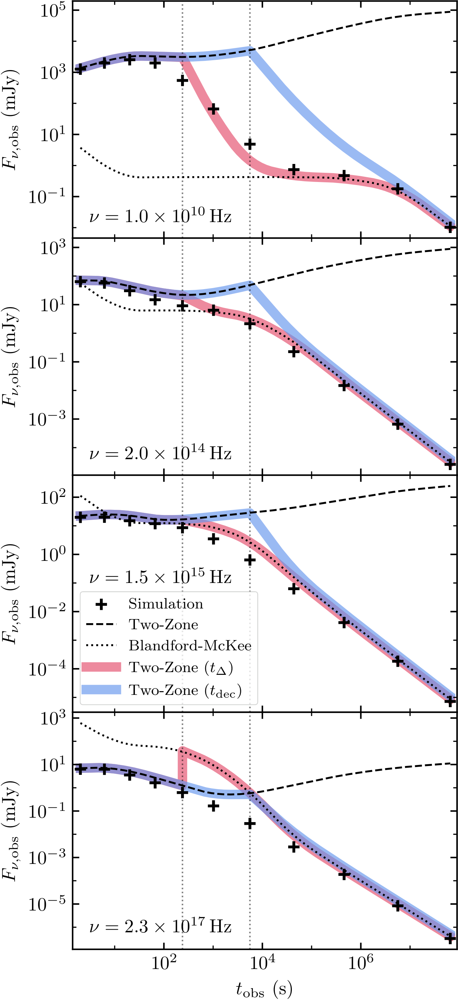
图注：Observer-frame light curves for the same mock GRB afterglow shown in Fig.~\(\ref{fig:spectral_flux},\) evaluated at representative radio, near-infrared, ultraviolet, and X-ray frequencies. The vertical dotted lines mark $t_{\Delta}$ and $t_{\mathrm{dec}}$, from left to right. The preferred transition time is frequency-dependent: applying self-similarity early at $t_{\Delta}$ better captures the radio through ultraviolet emission, while extending the two-zone model to $t_{\mathrm{dec}}$ better captures the X-ray emission by avoiding the forward-shock excess introduced by an early Blandford-McKee transition.
对应解读：对应“建议重点查看的图表”第4、5、7项，以及“关键图表逐图导读”中图4、图6、图7关于多频段光变、残差方向和不同过渡处方的讨论。
入选理由：这是最直接连接论文核心结论与可观测量的图：在射电、近红外、紫外和X射线代表频率上比较模拟、两区模型和不同切换处方，并标出t_Δ与t_dec。它清楚展示过早切到BMK会高估前向激波高频发射，而延迟到t_dec又会影响低到中频反向激波贡献，最能支撑日报关于频率相关系统误差和拼接处方敏感性的解读。
来源与置信度：\(arxiv_source\)；high；\(arxiv_source\) / main.tex:figure[7]
Fig06
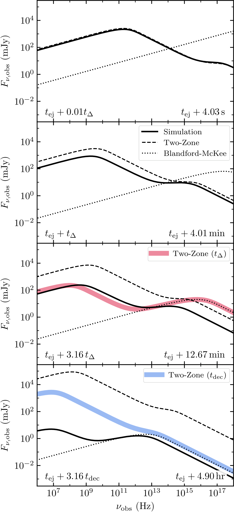
图注：Spectral flux density of a mock GRB afterglow with a Newtonian reverse shock expanding into a wind-like ($k=2$) circumburst medium, with $f_{\rm ej}=10^5$, $\gamma_{\rm ej}=31.6$, and $\Delta_{\rm ej}=0.01\times r_{\rm ej}=10^{12}\,{\rm cm}$. Spectra from the SRHD simulation are compared to the two-zone model, the Blandford-McKee solution, and hybrid prescriptions that switch from the two-zone model to Blandford-McKee plus reverse-shocked-ejecta evolution at either $t_\Delta$ or at $t_{\rm dec}$. The two-zone model agrees well at early times, but discrepancies appear by $t_{\Delta}$ as radial structure develops. Switching at $t_\Delta$ overpredicts the forward-shock emission, while extending the two-zone model to $t_{\rm dec}$ overpredicts the reverse-shocked-ejecta contribution.
对应解读：对应“建议重点查看的图表”第4、7项，以及“关键图表逐图导读”中多频段辐射、前向/反向激波分量和不同过渡处方比较的段落。
入选理由：该图给出同一牛顿型反向激波mock GRB余辉的谱能分布/谱通量密度，对比SRHD模拟、两区模型、BMK解以及在t_Δ或t_dec切换的混合模型。它比单一动力学量更接近观测拟合，能显示径向结构形成后模型在不同频率上的偏差来源，是理解‘射电到紫外反向激波可能被高估、X射线前向激波也可能被高估’这一结论的关键图。
来源与置信度：\(arxiv_source\)；high；\(arxiv_source\) / main.tex:figure[6]
Fig05
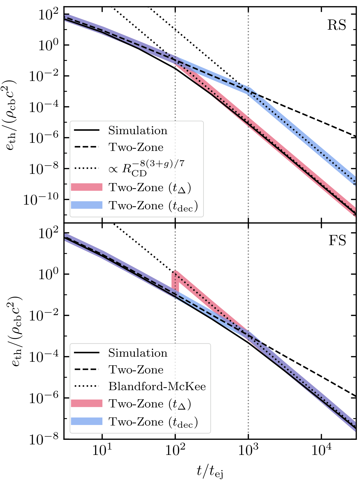
图注：Dimensionless thermal energy density in the reverse- (\textbf{top}) and forward- (\textbf{bottom}) shocked regions for a blast in a wind-like ($k=2$) environment with a Newtonian reverse shock. Two sets of two-zone model predictions are shown: one where the switch to late-stage prescriptions occurs at $t_{\Delta}$ (
Two-Zone ($t_{\Delta}$)'), and one where the switch occurs at $t_{\mathrm{dec}}$ (Two-Zone ($t_{\mathrm{dec}}$)'), with $g=1/2$ in both instances. The simulation data favors the earlier switch for the reverse-shocked region, and the later switch for the forward-shocked region. Selecting either of these timescales as a singular fiducial switching time either substantially overpredicts the thermal energy density in the reverse-shocked region indefinitely, or overpredicts it in the forward-shocked region during the transition window between $t_{\Delta}$ and $t_{\mathrm{dec}}$.对应解读：对应“建议重点查看的图表”第3、7项，以及“关键图表逐图导读”中穿壳后到减速/自相似建立之间过渡窗口和不同切换处方系统误差的讨论。
入选理由：该图直接比较反向激波区和前向激波区的无量纲热能密度，并分别测试在t_Δ与t_dec切换的两区模型处方。它揭示没有一个单一切换时间能同时正确描述两个激波区：早切更适合反向激波，晚切更适合前向激波。这正是论文所谓系统误差的动力学根源。
来源与置信度：\(arxiv_source\)；high；\(arxiv_source\) / main.tex:figure[5]
Fig03
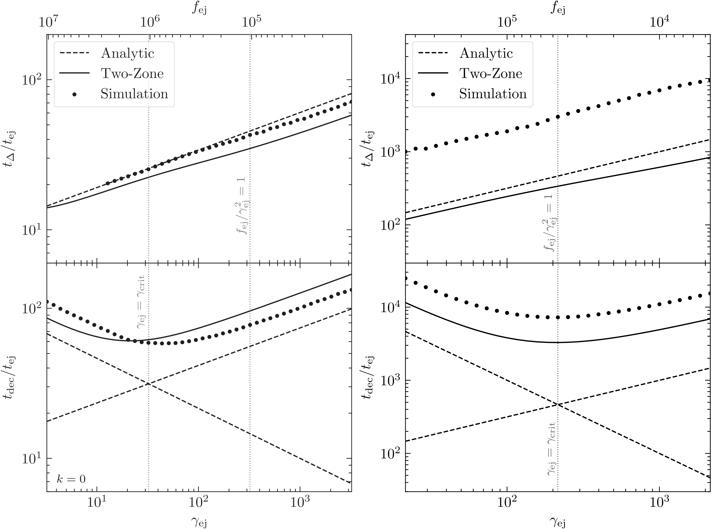
图注：Reverse shock crossing and deceleration timescales vs. ejecta Lorentz factors and overdensity parameters for a series of initial conditions that span from the NRS through RRS regimes in ISM ($k=0$, \textbf{left}) and wind-like ($k=2$, \textbf{right}) circumburst media. Both $\Delta_{\mathrm{ej}}=0.01r_{\mathrm{ej}}$ and $M_{\mathrm{ej}}=4\pi r_{\mathrm{ej}}^2\Delta_{\mathrm{ej}}f_{\mathrm{ej}}\rho_{\mathrm{cb}}\gamma_{\mathrm{ej}}$ were held fixed across all instances for each type of ambient medium. Shown are the analytic predictions from Sec.~\(\ref{subsec:timescales}\) as dashed lines, the two-zone model predictions (Sec. \ref{subsec:two_zone_model}) as solid lines, and our simulation results as scatter plot points. Also plotted are vertical lines that correspond to $\gamma_{\mathrm{crit}}$ (the critical Lorentz factor above which the reverse shock \(\textit{will become}\) relativistic before crossing the shell) and $f_{\mathrm{ej}}/\gamma_{\mathrm{ej}}^2=1$ (the threshold separating reverse shocks that \(\textit{start out}\) in the NRS or RRS regimes); note that these are equivalent in the external wind scenario. For the ISM case in particular, the two-zone model predicts a $\gamma_{\mathrm{crit}}$ that is lower than the analytic $\gamma_{\mathrm{crit}}$; this is because the ejecta shell is artificially inflated when applying the two-zone model at times $t > t_{\Delta}$, lengthening the lifespan of the reverse shock and allowing it to accelerate to relativistic speeds even at smaller $\gamma_{\mathrm{ej}}$. A few deep-NRS $k=0$ simulation measurements are omitted where $t_{\Delta}$ could not be robustly identified by the curvature-based diagnostic.
对应解读：对应“建议重点查看的图表”第1、3项，以及“关键图表逐图导读”中图1和图3关于反向激波牛顿型/相对论型判据、穿壳时间和减速时间比较的内容。
入选理由：该图在ISM和风介质中系统展示反向激波穿壳时间、减速时间随初始洛伦兹因子和过密参数的变化，并同时给出解析预测、两区模型和数值模拟。它能定位NRS/RRS参数空间、γ_crit和f_ej/γ_ej^2阈值，是理解本文为何特别强调牛顿型反向激波长过渡阶段的基础图。
来源与置信度：\(arxiv_source\)；high；\(arxiv_source\) / main.tex:figure[3]
Fig04
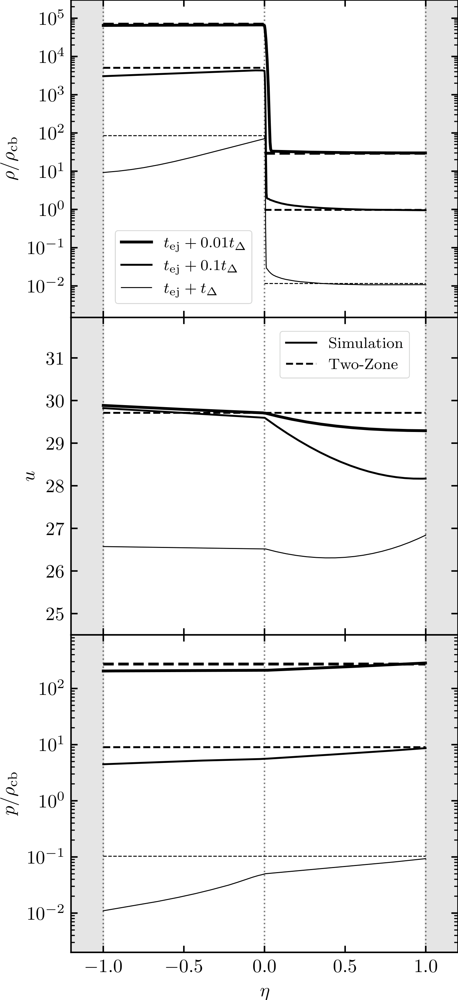
图注：A comparison of fluid primitive radial profiles as predicted by the two-zone model and as observed in simulations at various times up to and including $t_{\Delta}$ for a blast in a wind-like medium ($k=2$) in the NRS regime. The variable $\eta$ represents $(r - R_{\mathrm{CD}}) / (R_{\mathrm{CD}} - R_{\mathrm{RS}})$ for $R_{\mathrm{RS}} \leq r \leq R_{\mathrm{CD}}$, and $(r - R_{\mathrm{CD}})/(R_{\mathrm{FS}} - R_{\mathrm{CD}})$ for $R_{\mathrm{CD}} \leq r \leq R_{\mathrm{FS}}$. Expectedly, the simulation gradually drifts away from the two-zone model as the system evolves, and radial structure forms in both shocked regions.
对应解读：对应“建议重点查看的图表”第2项，以及“关键图表逐图导读”中图2关于流体径向剖面、两区均匀近似与模拟宽阔梯度差异的讨论。
入选理由：该图直接展示两区模型与SRHD模拟在反向激波区和前向激波区流体原变量径向剖面上的差异。模拟中逐渐形成的径向结构说明两区模型的均匀薄壳假设会丢失同步辐射后处理所需的空间分布信息，是连接动力学近似与辐射误差的重要证据。
来源与置信度：\(arxiv_source\)；high；\(arxiv_source\) / main.tex:figure[4]
Fig02
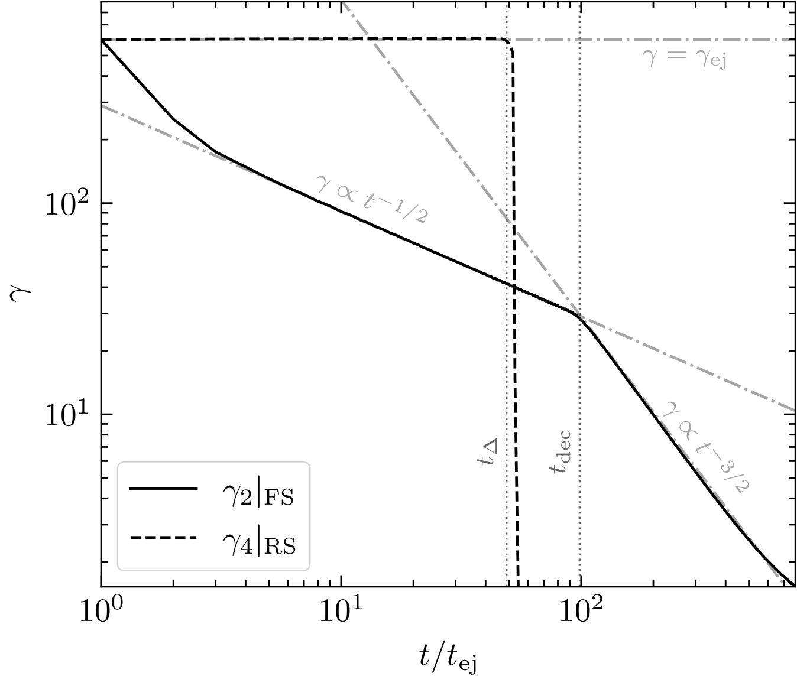
图注：Time series of the post-forward-shocked circumburst medium ($\gamma_{2}|_{\mathrm{FS}}$) and the pre-reverse-shocked ejecta ($\gamma_{4}|_{\mathrm{RS}}$) for a $k=0$ blast wave in the RRS regime where $f_{\mathrm{ej}} = 5.928\times 10^4$ and $\gamma_{\mathrm{ej}}=5.623\times 10^2$. There is a precipitous drop in $\gamma_{4}|_{\mathrm{RS}}$ as the reverse shock finishes sweeping through the ejecta shell, and a broken power-law knee in $\gamma_{2}|_{\mathrm{FS}}$ as the post-forward-shocked fluid begins to transition from a $t^{-1/2}$ scaling (typical of an RRS blast wave such as this one) into the expected Blandford-McKee $t^{-3/2}$ scaling.
对应解读：对应“建议重点查看的图表”第6项，以及“关键图表逐图导读”中关于Blandford–McKee收敛诊断、γ随时间斜率变化的讨论。
入选理由：该图用γ_2|FS和γ_4|RS的时间演化显示反向激波穿壳时的急剧变化，以及前向激波从RRS标度向BMK t^{-3/2}标度过渡的过程。它虽然是RRS例子，不如Fig05–Fig07直接支撑牛顿型反向激波系统误差，但对检查BMK收敛是否真正建立很有价值。
来源与置信度：\(arxiv_source\)；high；\(arxiv_source\) / main.tex:figure[2]
强相关工作
这篇文章与经典伽马暴余辉理论直接相连，包括 Blandford–McKee 相对论爆波解、Sari、Piran、Narayan 等建立的同步辐射余辉标度，以及 Sari 与 Piran、Kobayashi 等关于反向激波早期光学闪光的工作。它不是推翻标准余辉理论，而是指出标准理论中从早期两激波结构过渡到后期自相似解的半解析实现存在系统误差。建议检索关键词包括 “GRB early afterglow reverse shock two-zone model”, “Blandford McKee transition gamma-ray burst afterglow”, “Newtonian reverse shock GRB shell crossing”, “relativistic hydrodynamic simulations GRB afterglow”。
与相似观测工作的关系也很直接。GRB 990123 等早期光学闪光长期被作为反向激波标志，Swift 之后大量早期 X 射线和光学余辉显示复杂的峰、平台和再增亮。本文提醒，这些早期特征的一部分解释可能受动力学近似影响，尤其是当研究者用一个简化反向激波模型去同时拟合射电、光学和 X 射线数据时。相反观点或潜在张力主要来自那些认为标准半解析模型足以通过调整微物理参数拟合早期数据的工作；本文的数值模拟结果说明，即使拟合可行，参数物理含义也可能被系统误差污染。
相似工作：
- https://arxiv.org/abs/2606.02691
- https://ui.adsabs.harvard.edu/search/q=GRB%20early%20afterglow%20reverse%20shock%20hydrodynamic%20simulation
基础理论 / 方法工作：
- https://doi.org/10.1098/rspa.1976.0029
- https://arxiv.org/abs/astro-ph/9712005
- https://arxiv.org/abs/astro-ph/9803239
- https://arxiv.org/abs/astro-ph/9901233
相反观点 / 张力线索：
- https://ui.adsabs.harvard.edu/search/q=GRB%20afterglow%20two-zone%20model%20reverse%20shock
- https://ui.adsabs.harvard.edu/search/q=GRB%20reverse%20shock%20early%20optical%20flash%20model%20fitting
4. Hybrid stars among mass gap objects are excluded by twin stars at $1.4\,M_\odot$
- 来源：arXiv / astro-ph.HE
- 链接：https://arxiv.org/abs/2606.02593v1
- 作者：Alexander Ayriyan, David Blaschke, Marcin Dubaj, Oleksandr Vitiuk, Adrian Wojcik
- 评分：novelty 7/10，importance 8/10，relevance 8/10，final 8.70/10
- 推荐理由：致密星/混合星EOS与质量间隙天体解释直接属于高能天体物理；利用质量-半径约束和Bayesian分析论证质量间隙混合星受到1.4太阳质量双星分支强限制，若成立会影响GW致密并合残骸和中子星物态解释，值得保留。
中文题目：质量间隙天体中的混合星会被 \(1.4\,M_\odot\) 处的孪生星排除吗？
做了什么：这篇论文检验一个具体问题：引力波和电磁观测中所谓质量间隙 \(2.5 为什么重要：质量间隙天体的身份关系到两个问题：恒星级黑洞形成是否真的存在低质量截止，以及致密物质是否能在可观测质量范围内进入夸克相。本文的重要性在于它把这两个常被分开讨论的问题联系起来：同一个强子-夸克相变物态方程不能随意同时解释 \(1.4\,M_\odot\) 附近的半径/潮汐数据和 \(3\,M_\odot\) 以上的稳定恒星。换言之，若低质量中子星中已经出现明显的一阶相变信号，质量间隙混合星方案就会受到强烈限制。 理论 / 观测 / 仪器方法价值：对理论而言，本文给出了混合星达到质量间隙所需的相变起始密度、能量密度跳变和夸克相声速之间的定量关系，澄清了哪些参数区只是数学上可行、哪些还能经受现有观测约束。对观测而言，它说明未来半径、潮汐形变和高质量致密天体质量测量应联合解释，而不是单独把某个 \(2.6\,M_\odot\) 天体归类为黑洞或奇异星。对方法而言，Seidov 型相图加贝叶斯质量-半径约束是一种较直观的模型诊断工具。 为什么应该关注：如果你关心核物质物态方程、引力波源分类或低质量黑洞的形成通道，这篇文章值得看。它提出一个可被观测证伪的逻辑链：一旦 \(1.4\,M_\odot\) 附近的质量孪生星被可靠识别，质量间隙中的稳定混合星解释就不再自然；反之，如果未来确认存在半径较大且质量 \(3\,M_\odot\) 以上的非黑洞致密星，就会强迫我们接受非常早且非常硬的夸克物质相。 科学问题：本文针对的是质量间隙致密天体是否可以由混合星解释。传统上，\(2.5 作者怎么做：作者采用一种通用的混合物态方程参数化，而不是依赖某个单一微观模型。核心自由度包括相变发生的压力或密度、相变处的能量密度跳变，以及高密度夸克相的硬度，通常可用有效声速刻画。他们把这些参数投影到 Seidov 型判据图中，区分相变后恒星是否立即失稳、是否形成第三族分支、是否出现质量孪生星，以及最大质量是否能进入 \(2.5\,M_\odot\) 以上。随后再把这些候选物态方程与现代质量-半径观测约束进行贝叶斯比较。 关键结果：论文发现，想让混合星成为质量间隙对象，需要非常早的退禁闭起始点，也就是在较低质量恒星内部就已经产生夸克核心，同时夸克相还必须非常硬，才能在相变软化后重新支撑到 \(2.5\,M_\odot\) 以上。这不是普通的“夸克物质会让星更重”的说法；一阶相变通常先软化物态方程，造成稳定性损失，只有后续夸克相足够硬时才可能形成第三族高质量分支。贝叶斯分析却更偏好在典型 \(1.4\,M_\odot\) 附近发生退禁闭并产生孪生星的物态方程，而这些物态方程并不支持质量间隙混合星。 局限和下一步：这类结论依赖于现有质量-半径约束、所选物态方程参数化、相变形式以及夸克相声速的先验范围。若未来发现更精确的 \(2.6\) 到 \(3\,M_\odot\) 天体半径或潮汐形变，或者微观 QCD 计算支持更极端的高密度硬化，结论可能需要修正。下一步最关键的是把 NICER 半径、双中子星潮汐形变、脉冲星高质量测量和质量间隙并合事件统一纳入层级贝叶斯框架，并检验是否真的存在 \(1.4\,M_\odot\) 附近半径明显不同但质量相近的孪生星。 研究对象是混合星，即外层主要由强子物质构成、核心可能为退禁闭夸克物质的致密星。与纯中子星相比，混合星的关键不是简单地“多了一种成分”，而是高密度物质的相结构可能发生突变。一阶相变会带来能量密度不连续，使质量-半径曲线出现不稳定段，甚至产生与普通中子星分支分离的第三族致密星分支。 历史上，所谓质量孪生星是强一阶相变的典型观测信号：两颗恒星质量几乎相同，但半径显著不同，分别位于普通强子星分支和混合星分支。这个概念与白矮星、中子星构成的“第二族”类比，因此混合星第三族有时也被称为第三族致密星。若在 \(1.4\,M_\odot\) 附近发现质量孪生星，它会暗示相变在并不极端的中心密度处已经发生。 观测背景来自几个方向。首先，约 \(2\,M_\odot\) 脉冲星要求物态方程不能太软。其次，GW170817 等双中子星并合的潮汐形变限制又不支持低密度段过硬。第三，NICER 给出的脉冲星半径测量约束了 \(1\) 到 \(2\,M_\odot\) 区间的质量-半径关系。最后，一些引力波候选事件可能包含 \(2.5\,M_\odot\) 附近的致密伴星，这推动了质量间隙天体身份的讨论。 为什么现在值得重新看？因为单一观测已经无法独立决定物态方程。一个物态方程若要同时通过低质量半径、\(2\,M_\odot\) 最大质量、潮汐形变和质量间隙对象约束，必须在不同密度区间有精细的软硬变化。一阶相变提供这种非单调刚度变化的机制，但也带来稳定性代价。因此，质量间隙混合星不是“只要有夸克物质就行”，而是要求相变位置和相变后硬化程度非常特殊。 常见误区有三点。第一，把质量超过 \(2.5\,M_\odot\) 的致密天体自动称为黑洞，忽略了非常硬物态方程或自束缚星的可能性。第二，把夸克相自动等同于更硬的物质；实际上退禁闭一阶相变通常引入软化和失稳。第三，把 \(1.4\,M_\odot\) 半径约束与质量间隙问题分开看；本文强调，这两者由同一条质量-半径曲线连接，不能彼此独立调参。 致密星结构的基本物理图像是静水平衡与广义相对论引力之间的竞争。给定物态方程 \(P(\varepsilon)\)，其中 \(P\) 是压强、\(\varepsilon\) 是能量密度，Tolman-Oppenheimer-Volkoff 方程决定一族质量-半径解。沿着中心密度增加的序列，若质量随中心密度增加而增加，通常对应稳定径向基模；若出现 \(dM/d\varepsilon_c<0\)，则进入不稳定段。 一阶强子-夸克相变的特征是在某个转变压力处压强连续但能量密度发生跳变。物理上，这表示在相同压力下系统从强子相跳到夸克相，需要释放或吸收潜热。这个能量密度跳变会降低星体对引力压缩的响应，使相变刚开始时的微小夸克核心可能触发失稳。Seidov 判据正是估计这种失稳阈值的经典工具。 本文所用的通用混合物态方程通常可理解为：低密度段采用与核物质约束相容的强子物态方程；在某个相变点发生 Maxwell 型一阶相变；高密度夸克相用近似常声速形式描述。关键量包括相变压力 \(P_{\rm trans}\)、相变前能量密度 \(\varepsilon_{\rm trans}\)、能量密度跳变 \(\Delta\varepsilon\)、以及夸克相声速平方 \(c_s^2\)。这些量共同决定第三族分支是否存在、最大质量多高、半径是否与强子星分支明显分离。 观测上，物态方程不是直接测量的，而是通过质量、半径、潮汐形变等可观测量反推。NICER 脉冲轮廓建模给出质量-半径后验，引力波相位给出潮汐形变组合，射电脉冲星计时给出精确质量。本文的贝叶斯分析本质上是在物态方程参数空间中寻找同时满足这些数据的区域，并检查这些区域是否也支持质量间隙稳定星。 需要特别注意退化关系和系统误差。较早的相变起始点可以减小 \(1.4\,M_\odot\) 半径，但较大的能量密度跳变会损害稳定性；较高的 \(c_s^2\) 可以恢复高质量支撑，但若过高则接近因果极限并可能难以由微观理论解释。半径测量的系统误差、潮汐形变对低密度物态方程的敏感性、以及质量间隙事件中对象自旋和并合动力学的不确定性，都会影响最终判断。 第一步是静态球对称致密星的结构方程。给定物态方程 \(P(\varepsilon)\)，质量函数 \(m(r)\) 和压强 \(P(r)\) 满足 TOV 方程： 这里 \(r\) 是半径坐标，\(G\) 是引力常数，\(c\) 是光速。边界条件为中心 \(m(0)=0\)、\(P(0)=P_c\)，表面由 \(P(R)=0\) 定义，得到总质量 \(M=m(R)\)。 第二步是稳定性判据。沿中心能量密度 \(\varepsilon_c\) 参数化的平衡序列，径向稳定分支通常满足 而转折点附近基模频率变号。这个条件不是完整径向振荡计算的替代品，但足以解释为什么一阶相变后的质量-半径曲线可能出现断裂和第三族分支。 第三步是一阶相变的 Maxwell 构造。相变压力处强子相和夸克相的重子化学势相等，压强也相等： 能量密度从 \(\varepsilon_{\rm trans}\) 跳到 \(\varepsilon_{\rm trans}+\Delta\varepsilon\)。其中 \(\Delta\varepsilon\) 是潜热对应的能量密度不连续，是决定相变后是否失稳的核心参数。 第四步是 Seidov 型失稳阈值。对刚出现微小高密度核心的星体，常用近似判据可写为 若跳变超过右边阈值，小夸克核心一出现就会使原分支失稳，从而有机会在更高中心密度处形成分离的第三族分支。若跳变太小，则质量-半径曲线更可能连续过渡，孪生星信号不明显。 第五步是高密度夸克相的常声速参数化。相变后常写作 这里 \(c_s^2=dP/d\varepsilon\) 是以 \(c=1\) 单位表示的声速平方。较大的 \(c_s^2\) 表示物态方程更硬，更容易支撑高质量混合星；但因果性要求 \(c_s^2\leq 1\)。 第六步是潮汐形变与质量-半径曲线的联系。单星无量纲潮汐形变可写为 其中 \(k_2\) 是 Love 数，\(R\) 是半径，\(M\) 是质量。由于五次方依赖，\(1.4\,M_\odot\) 附近半径的小变化会显著影响双星并合波形，因此潮汐数据对低到中等密度物态方程非常敏感。 第七步是贝叶斯筛选的基本形式。给定物态方程参数 \(\theta=(P_{\rm trans},\Delta\varepsilon,c_s^2,\ldots)\)，后验为 其中 \(D\) 表示质量、半径、潮汐形变等数据，\(\pi(\theta)\) 是先验，\({\cal L}\) 是似然。本文关心的不是单个最优点，而是后验支持的参数区是否允许 \(M_{\max}>2.5\,M_\odot\)。 第八步是把质量间隙要求写成模型诊断条件： 这说明只有最大质量超过质量间隙下限还不够，该高质量解必须位于稳定混合星分支上。本文的中心结论就是：满足这些条件的 \(\theta\) 往往需要极低 \(P_{\rm trans}/\varepsilon_{\rm trans}\) 和很高 \(c_s^2\)，但这些区域不被当前贝叶斯约束优先支持。 本文或同类工作的拟合对象不是单一观测曲线，而是一族由物态方程参数生成的质量-半径、质量-潮汐形变和最大质量预言。参数通常包括强子低密度段的选择或超参数、相变压力 \(P_{\rm trans}\)、能量密度跳变 \(\Delta\varepsilon\)、夸克相声速平方 \(c_s^2\)，以及可能的连接密度或平滑参数。每组参数通过 TOV 方程生成稳定分支，再与观测数据比较。 似然可以由多类数据相乘得到：射电脉冲星质量给出 \(M\) 的窄约束；NICER 给出二维 \(M-R\) 后验或其核密度估计；引力波给出双星质量和潮汐形变的联合后验；核物理实验或手征有效场论给出低密度压力范围。实际分析中，必须小心不要把已经含有物态方程先验的公开后验再次当作纯似然使用，否则会重复计入先验信息。 残差和诊断量应从物理曲线而不是单个参数看。若某个物态方程能支撑 \(2.6\,M_\odot\)，但同时给出过大的 \(1.4\,M_\odot\) 半径或过大的潮汐形变，它就不应被视为成功。相反，若它能解释较小半径和潮汐约束，却因为相变过强导致最大质量低于 \(2\,M_\odot\)，也会被高质量脉冲星排除。本文强调的张力正是在这些要求之间出现。 主要退化关系包括：较低的相变压力与较大的半径收缩相关，但也更容易影响 \(1.4\,M_\odot\) 数据；较大的 \(\Delta\varepsilon\) 有助于产生分离的孪生分支，却会扩大不稳定区；较大的 \(c_s^2\) 可以提高混合星最大质量，但会把模型推向极硬夸克物质。由于这些参数共同作用，单看最大质量或单看相变密度都可能误判。 模型可能失败的地方也很清楚。常声速夸克相是有用的有效参数化，但未必对应真实 QCD 相图；Maxwell 构造忽略了有限表面张力下可能出现的混合相；旋转、温度和磁场在并合遗迹或年轻致密星中可能不可忽略；质量间隙事件的天体身份还依赖引力波参数估计和星族形成先验。因此，本文结论应理解为在冷、静态、球对称、通用一阶相变框架下的强约束，而不是对所有奇异致密星模型的绝对排除。 数据/样本部分应先看作者采用了哪些质量-半径和潮汐约束。重点不是记住每个观测源的名字，而是确认这些约束覆盖了 \(1.4\,M_\odot\)、\(2\,M_\odot\) 和质量间隙附近哪些质量范围，以及它们是否彼此独立。读者应留意作者如何处理 NICER 后验、引力波潮汐形变和高质量脉冲星下限。 物态方程方法部分是全文核心。这里应检查相变是如何参数化的，低密度强子段如何选择，高密度夸克段是否采用常声速形式，以及参数先验是否偏向早相变或硬夸克物质。特别要看 \(P_{\rm trans}\)、\(\Delta\varepsilon\) 和 \(c_s^2\) 的定义，因为这些量决定 Seidov 型相图中的位置。 Seidov 型参数空间图或分类结果部分应重点阅读。它通常会把不同区域标成连续混合分支、失稳无第三族、存在第三族、存在质量孪生星或最大质量进入质量间隙。读者应把这些区域与直觉联系起来：相变越早、跳变越大、相变后越硬，越可能产生显著第三族，但也越受稳定性和观测约束限制。 贝叶斯结果部分要看后验概率集中在哪里，而不是只看是否存在少数可行点。本文的关键说法是，质量间隙混合星需要极端参数，但现代观测更偏好 \(1.4\,M_\odot\) 附近的孪生星相变情形。读者应检查这个结论是否由似然主导，还是由先验边界或模型族选择驱动。 讨论和结论部分应关注作者如何表述“排除”。这里的排除不是说任何超过 \(2.5\,M_\odot\) 的非黑洞天体都不可能，而是说在他们的通用一阶退禁闭混合星框架内，一旦 \(1.4\,M_\odot\) 孪生星被确认，质量间隙混合星方案会与同一物态方程的稳定性和观测约束不相容。 物态方程参数空间图：检查横轴和纵轴是否是 \(P_{\rm trans}/\varepsilon_{\rm trans}\)、\(\Delta\varepsilon/\varepsilon_{\rm trans}\) 或等价量；重点看 Seidov 阈值线两侧如何划分稳定和失稳区域。 质量-半径曲线族：看不同参数选择下是否出现断裂、回折、第三族分支和同质量不同半径的孪生点；特别关注 \(1.4\,M_\odot\)、\(2\,M_\odot\) 和 \(2.5\,M_\odot\) 附近。 后验分布或角图：检查 \(P_{\rm trans}\)、\(\Delta\varepsilon\)、\(c_s^2\) 的边缘分布和二维相关；看质量间隙混合星区域是否处于低后验概率尾部。 最大质量诊断图：看 \(M_{\max}\) 随相变起始点和夸克相硬度如何变化；要区分纯强子最大质量、混合星最大质量和第三族分支最大质量。 潮汐形变约束图：若有 \(\Lambda(M)\) 或 \(\Lambda_{1.4}\) 分布，应检查进入质量间隙的模型是否同时违反双中子星并合约束。 贝叶斯证据或模型权重表：若论文列出不同场景的证据比，应看支持 \(1.4\,M_\odot\) 孪生星和支持质量间隙混合星的相对权重，而不只看最佳拟合曲线。 图 1：通常应是 Seidov 型相图或混合物态方程参数空间。横轴可能表示相变起始强度，例如 \(P_{\rm trans}/\varepsilon_{\rm trans}\)；纵轴可能表示相对能量密度跳变 \(\Delta\varepsilon/\varepsilon_{\rm trans}\)。图上的分界线对应小夸克核心出现后是否立即失稳。读图时要看质量间隙混合星可行区是否只出现在低相变压力和高硬度的角落，不要把“数学可行区域”误读成“观测偏好区域”。 图 2：应重点看质量-半径关系。横轴为半径 \(R\)，纵轴为质量 \(M\)，不同曲线代表不同相变参数。若出现质量孪生星，图上会有同一 \(M\) 对应两个稳定半径的点，中间由不稳定段隔开。读图陷阱是把回折段也当成可观测星；必须确认该段是否满足 \(dM/d\varepsilon_c>0\)。 图 3：后验或参数角图。坐标轴为物态方程参数，例如 \(P_{\rm trans}\)、\(\Delta\varepsilon\)、\(c_s^2\) 或最大质量 \(M_{\max}\)。等高线给出置信区域或可信区域。关键是看支持质量间隙混合星的点是否被压到后验尾部，以及这些点是否要求 \(c_s^2\) 接近因果上限。 图 4：最大质量或第三族分支分类图。纵轴可能是 \(M_{\max}\)，横轴可能是相变起始密度或压力，颜色表示夸克相声速。主要结论应是：早相变加硬夸克相才可能把稳定混合星推到 \(2.5\,M_\odot\) 以上。读图时要分清超过 \(2.5\,M_\odot\) 的是否为稳定混合星，而不是相变前的强子分支或不稳定解。 图 5：观测约束叠加图。若图中叠加 NICER、脉冲星质量和引力波潮汐约束，应看模型曲线在哪些质量段穿过可信区域。进入质量间隙的模型若在 \(1.4\,M_\odot\) 附近半径过大或过小，都说明它与低质量数据存在张力。置信区间的宽度也很重要，因为当前半径误差仍可能保留少量极端模型。 Fig02 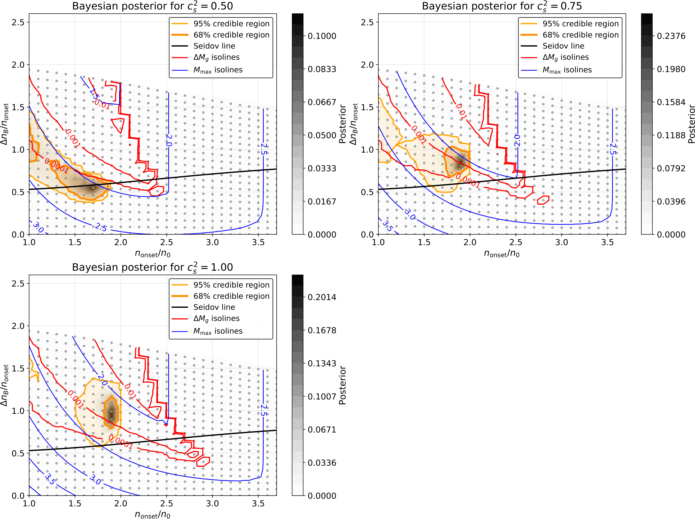 Fig01 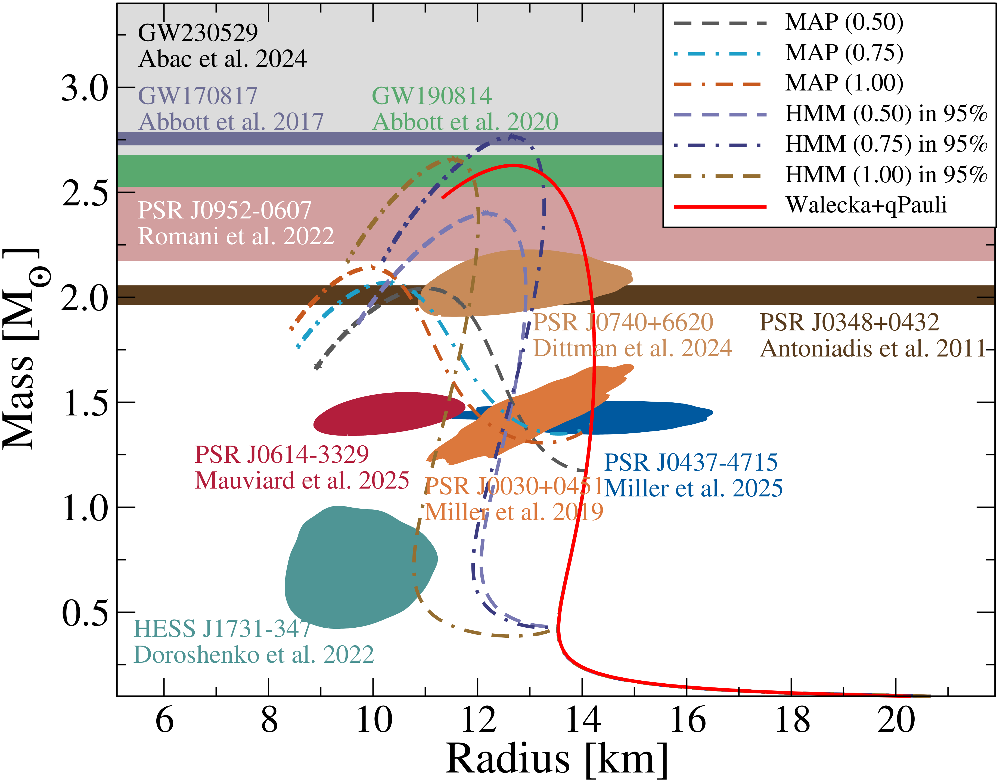展开详细解读：文章讲解、背景、理论、重点章节、图表与相关工作
文章详细讲解
背景知识
基础理论 / 方法脉络
公式与推导
模型拟合 / 应用方法
重点章节 / 结果段落怎么读
建议重点查看的图表
关键图表逐图导读
论文原图 / 可嵌入图片
图注：Seidov diagrams, density jump in units of the onset density versus onset density for the hybrid EoS \(\eqref{eq:eos}\) and three cases of squared sound speed: $c_s^2=0.50$ (upper panel), 0.75 (middle panel), 1.00 (lowest panel). The black line denotes the modified Seidov instability criterion \(\eqref{eq:seidov-n}\) and white lines indicate maximum masses of 2.0, 2.5 and 3.0 $M_\odot$, where that for 2.5 $M_\odot$ is the border to the mass gap region. Red lines enclose regions where the mass defect in a transition between twins of equal baryon mass $\Delta M/M_\odot=0.0001$, 0.001, 0.01. For details, see text.
对应解读：对应“建议重点查看的图表”第1项物态方程参数空间图、第4项最大质量诊断图，以及“关键图表逐图导读”中关于 Seidov 型相图、质量间隙混合星可行区和 2.5 \(M_\\odot\) 边界的解读。
入选理由：该图直接给出密度跳变相对于相变起始密度的 Seidov 图，并分三个夸克相声速平方 \(c_s^2=0.50\)、0.75、1.00 面板展示。黑线是修正 Seidov 失稳判据，白线标出最大质量 2.0、2.5、3.0 \(M_\\odot\)，红线标出孪生星等重子质量转变的质量亏损区域，因此最直接支撑论文核心结论：质量间隙混合星只在早相变、强能量密度跳变和极硬夸克物质的受限区域出现。
来源与置信度：\(arxiv_source\)；high；\(arxiv_source\) / manuscript.tex:figure[2]
图注：Mass--radius diagram for representative parametrizations of the hybrid EoS \(\eqref{eq:eos}.\) The solid red curve shows the purely hadronic EoS; the other curves correspond to hybrid EoS solutions with different values of $c_s^2$ in brackets. MAP denotes the EoS with the maximum-a-posteriori probability, while HMM denote the heaviest maximum-mass models within the parameter region of 95\% credibility. Colored contours show NICER mass--radius constraints for PSR J0030+0451~\(\citep{Miller:2019cac},\) PSR J0740+6620~\(\citep{Dittmann:2024mbo},\) PSR J0437-4715~\(\citep{Miller:2025qfq},\) and PSR J0614-3329~\(\citep{Mauviard:2025dmd},\) together with HESS J1731-347~\(\citep{Doroshenko2022}.\) Horizontal bands indicate mass constraints for massive pulsars and the mass-gap objects: GW230529, GW170817, and GW190814 with gray, violet, and green bands, respectively~\(\citep{LIGOScientific:2024elc,LIGOScientific:2017vwq, LIGOScientific:2020zkf}.\) The remaining bands show the $1\sigma$ mass constraints for PSR J0348+0432~\(\citep{Antoniadis:2013pzd}\) and the black widow pulsar PSR J0952-0607~\(\citep{Romani:2022jhd}.\)
对应解读：对应“建议重点查看的图表”第2项质量-半径曲线族、第5项观测约束叠加图，以及“关键图表逐图导读”中关于质量-半径关系、NICER/脉冲星/引力波质量约束和 1.4、2.0、2.5 \(M_\\odot\) 附近张力的解读。
入选理由：该图展示代表性混合 EoS 的质量-半径曲线、纯强子曲线、MAP 模型和 95% 可信区域内最重最大质量模型，并叠加 NICER 质量-半径约束、多颗高质量脉冲星质量带以及 GW230529、GW170817、GW190814 等质量间隙相关质量带。它能把参数空间结论转化为可观测的 M-R 诊断，尤其适合说明能进入质量间隙的模型是否同时与低质量半径和高质量约束相容。
来源与置信度：\(arxiv_source\)；high；\(arxiv_source\) / manuscript.tex:figure[1]
强相关工作
这篇工作与第三族致密星、质量孪生星和常声速混合物态方程的大量研究直接相关。建议检索关键词包括“hybrid stars mass twins”、“third family compact stars”、“Seidov criterion phase transition”、“constant speed of sound equation of state”、“mass gap compact object hybrid star”。基础脉络可从 Seidov 判据、一阶相变导致稳定性改变、以及 Alford 等人提出的常声速参数化混合星研究读起。
它也与质量间隙天体的观测解释存在张力。引力波事件中低质量次级天体可被解释为低质量黑洞、重中子星、混合星或其他奇异致密星；不同解释对最大非旋转质量、旋转支撑和形成通道有不同要求。本文的相反指向是：如果 \(1.4\,M_\odot\) 附近真的存在退禁闭孪生星，那么把 \(2.5\,M_\odot\) 以上天体解释为同类冷静态混合星会变得不自然。检索时还应使用“GW190814 secondary nature”、“low mass black hole mass gap”、“NICER equation of state phase transition”、“tidal deformability hybrid stars”等关键词。
相似工作：
- https://arxiv.org/abs/2606.02593
- https://arxiv.org/abs/1302.4732
- https://arxiv.org/abs/1512.09183
基础理论 / 方法工作：
- https://ui.adsabs.harvard.edu/abs/1971SvA....15..347S/abstract
- https://arxiv.org/abs/astro-ph/0608345
- https://arxiv.org/abs/1711.05557
相反观点 / 张力线索：
- https://arxiv.org/abs/2006.12611
- https://arxiv.org/abs/2006.12612
- https://arxiv.org/abs/2105.06981
说明
评分由 LLM 给出初评，再由本地阈值策略过滤；IACT、TeV 伽马射线和高能中微子天文学按重点方向处理。